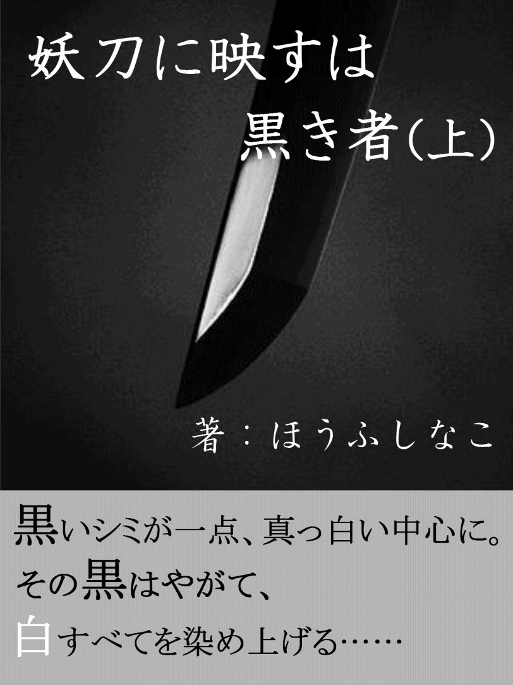

| 妖刀に映すは黒き者（上） | |
| ほうふしなこ | |
| (2015) | |

黒いシミがたった一点、真っ白いすべての中心に。
それは、決して白に戻ることなく。
じわじわ、と。
滲み、広がるばかり。
やがてそれは、白を呑み込み、灰色すらも通り越して、すべて......
真っ黒となる。
憎い。
憎い......
憎い、憎い......
裏切ったあいつが、悪い。
憎い――！
絶対に許さない。
ほんの僅かな光さえも呑み込んでしまいそうな暗夜だった。
果てしなく黒い空は、何ものにも決して染まりはしないだろう。
海沿いに犇めき合う工場群の隅で、少年――荒谷真汰はそんな空を羨ましく思った。
生温かい風に乗って、潮の腐ったような、嫌なにおいが鼻を突く。
海は好きではない。空と同じく真っ黒なそこは凪いでいたが、ちゃぷんちゃぷんとコンクリート塀に当たる波が、それでもそこが静止しないことを告げているようだった。
「......来た」
身を潜めていた場から、彼はゆっくりと立ち上がる。
十四歳になったばかりの少年が両の手に持っている得物が、光のない場にも関わらず、鈍く閃いた。鞘のないそれらは、忌まわしいものを断ち切るための、穢れたものだ。
真汰は徐に上を見る。
空は相変わらず暗かった。
錆びついた工場内から声が聞こえる。
男なのか女なのか、年寄りなのか、子どもなのか......
分からなくなってしまったそれは、本来ならば誰にも聞こえることはない。
それでも、訴え続ける。
憎い......
憎い、憎い、憎い......
裏切られた。
裏切った、裏切ったな......
裏切った奴が憎い――！
ゆらりとそれが、何もない空間に揺れる。
――揺れ続ける。その度に、『うぅ......ぎぃ......』と呻き、梁がギシギシと軋んだ。やがてすべてが治まるとそれはふっと消え、再びそこに現れる。そしてまた揺れ、梁が軋ませながら苦しげに呻くのだ。
それを繰り返す。繰り返している。何十回、何百回。誰も止める者がいなければ、恐らく永久に揺れては消え、呻き続けるだろう。
それは声同様に、姿は性別も年齢も分からない、ただ真っ黒い影になりつつあった。この世を去っても、現世での激しい憎悪、嫉妬、悔恨、怨恨の黒い渦から逃れられず、落ち続けている。だから、真汰達は彼らを黒き者と呼んでいた。
「うっせぇよ」
『？』
揺れ続けていた黒き者がぴたりと止まった。
それからぐるりと振り向く。辛うじてぎょろりとした右目がひとつだけ残っていたが、それがなければどちらが前なのか判断するのは難しかった。右目以外は、真っ黒だ。ここには光などない。片方だけの濁ってしまったその目が訴えているようだった。
『憎い......』
真汰はふっと息を吐く。
「別にいいんだけど。まあ、いいんだけどさ」
両手に持つ二本の刀を、強く握った。刀身は、真汰の身長の半分近く。質量はないはずなのに、ずしりと重いそれら。真汰の心に、暗い影を落とし続ける。
いっそそれに染まりたかった。
でも、できない。身を委ねたくても、役目を果たさなければならない。
断ち切る役目を――
『憎い......憎い憎い憎い......！ よくも裏切ったナァ！』
黒き者がぶわりと広がり、無数の針となって真汰に襲いかかった。
「あぁあ、めんど」とぼやきつつ、少し長めの右の刃で針を薙ぎ、左の峰で打ち落とした。
しかし、針はすぐに回復し、真汰を貫かんと向かってくる。こうなってしまえば見境などない。かわしながら、揺れるそれへと真汰は工場内を疾走した。
避け切れなかった鋭利な針先が、何度か腕や足、胴を掠めていったが、気にしかなった。じわりと鮮血が灰色のＴシャツに染み込んだ。
『悪い――おまえがァ......！』
強引に真汰の耳に入ってくるそれの声が、いつかの声と重なった。
あんたが悪いのよ......あんたがぁ......！
分かってるよ......と、少年の唇が微かに動いた。
同時に。
『ッ――――』
跳躍する勢いで振り上げた真汰の左の刃が、かつてここの工場長だった黒き者を真っ二つに断った。
どうして俺だけ......
どうして.........
じわじわと霧散する黒に染まった魂。最後に残ったのは、あの右目だった。
裏切ったあいつが悪い......憎い......あいつが悪いのに............
光のないここで、微かに輝く滴があった。
でも、真汰にできることはない。
ただ両手の、かつては強力な黒き者だったそれらを振ることしか――......
真汰は右手に持つそれを振り下ろした。すぱりと割れた右目は、ゆっくりと白い霞となり、消えて行った。
「もう憎まなくていい」
右目が最期に見た方向を向いて、真汰は言った。それは、憎み続けて消えた彼を斬った自分に言い聞かせるようでもあった。
『真汰！ もういいだろうよ？』
『早く戻してください』
工場から出れば、手に持っていた二本の刀が喚き出した。常人には聞こえない声だ。が、真汰にはハッキリどころかうるさいくらいだった。
「だぁあもぉ！ いっつもいっつもうっせんだよ！」
鞘のないそれらを、真汰は乱暴に放り投げた。と、瞬時の二刀は、人型へと姿を変える。
『のぉ！ おまえ！ もっと丁寧に扱え！』
『そうですとも！ 疵がついたらどうしてくれのですか！』
最終的に武者へと変じたふたりは、代わる代わる真汰へと文句を垂れる。
『物は大事に、武士の心だ！』
『あなたはなっていない』
右の武骨そうな武者が言えば、左の繊細そうな彼も言った。ボロボロの鎧で、至るところに傷を負った風体のふたりだが、態度は生きている人間よりも活き活きしている、というより図々しい。
『大体おまえはな、真汰......』
『真汰、もう少し我らの......』
どうしてこうも声がでかいのか。真汰は両手で耳を塞ぎながらうんざりする。
静かな得物がほしい......
『聞いておるのか？ 真汰！』
「うっせぇんだよ！」
武者ふたりに詰め寄られ、真汰は堪らず大声を上げた。ここが無人で本当によかったと後で思った。
「おまえら元々傷だらけだろうが！ 持ってやってるだけでも有り難いと思えよ！」
『それは思っている』
『我もだ』
「ッ......」
反論すればあっさり認められた。真汰はぐっと押し黙る。
ふたりの武者は、泥だらけの顔を真剣なそれに変えていた。
『この時代で、俺達を持てるのはおまえだけだからな』
『持たなくても良いものを。が、今日こそ訊きたい。何故妖刀に変じた我らを振い続けるのです？』
何百年も穢れたものとして存在し続けるふたりの暗い瞳に、真汰は自分を映していた。
が、そこには落ち続ける自分がいるだけ。
乾いた笑みを浮かべて、真汰は踵を返す。
「帰るぞ、万次、伊助」
右の武者万次と、左の者伊助は、そんな少年の背を無言で追った。
そこは、真新しい畳みの香りと、湿った土の匂いが立ち込める部屋だったことを憶えている。
少年の前には、二口の刀。古い物のようだったが、鞘のないそれらは薄暗いこの空間に置かれていても鈍く閃き、脈動していた。少年が柄に触れた、その瞬間から――それが、刀に鞘として選ばれた証だ。
二口の刀の名は、少年から見て手前にあり右に柄〈曼陀羅〉、奥にあり左に〈伊迦魅〉と言った。〈曼陀羅〉と〈伊迦魅〉は、どういうわけだか二口でひとりを選ぶとされ、百年近く持ち手がいなかった。それらが何の気紛れか、まだ十二歳の少年を鞘としたのだった。
刀を挟みんだ少年の向かい側に男が座っていた。歳は三十代前半のように見えた。刀の切っ先のような黒い眼光は、幼さが残る少年をすっと貫きそうだ。
お前が妖刀〈曼陀羅〉と〈伊迦魅〉の鞘となる――分かっているな？
男に問われたことを少年は十分理解していた。
黒き者を斬るために、黒き者を封じ込め、呪となる名をつけた刀が妖刀だった。鞘となった者は、刀身から漲る黒い感情を抑える役目がある。できなければ呑まれ、いずれは――
少年は、しかし深く頷いた。そんなことはどうでもよかった。だから頷いた。
少年には、断ち切れないものがあった。
血だ。どれほど母が抗い、家と離れても、結局は戻ってくることになっていたのだ。
少年は、二口の妖刀を見据えた。
血を――と、男に促され、少年は頷いた。
右に柄の刀の腹に右親指を、左の方に左親指を宛がい、自らすぅっと引いた。じりじりと焼けるような痛みが、鼓動と連鎖していった。
少年の鮮血がじわりと刃に浸透し、息衝いた。
憎しみに落ちた死者を斬る妖刀達――そこに少年の血が、顔が、魂が滲み、落ちた。
ぎらぎらと瞬いた二口は、徐々に変じ、ぼろぼろの鎧を纏う武者としての姿を現した。彼らの姿が見えることも、この家系に産まれた証だ。
荒谷真汰、今日からおまえは〈曼陀羅〉と〈伊迦魅〉の鞘、妖刀使いだ。
母が最期まで疎んだ者になった。
これでいいのだ。絶ち切ることのできないものがある。
これが、母との繋がりだ。
少年の右に〈曼陀羅〉の万次、左に〈伊迦魅〉の伊助がついた。
『むむぅ？ お前が今日より俺らの鞘かぁ？』
『これまたお若い。大丈夫なのですか？』
自分達で選んだくせに、開口一番が馬鹿にしたようなそれらだった。
だから、少年はムカついた。
だから、必ずこいつらを抑えてやることを誓った。
だから、――――
午前中はほぼ寝て過ごす。それが、二年Ｃ組荒谷真汰という生徒だった。
殆どの教員が、なぜかそれを黙認し、注意すらしない。
でも、新任教師で社会科担当の相澤晴菜は、どうしてもそれができなかった。
「荒谷君、聞いてるの？」
「......」
最前列のど真ん中にも関わらず、机に突っ伏している彼から返事はない。
晴菜は恐る恐る傍に歩み寄った。
「荒谷君」
「......」
熟睡中のようで、全く反応がない。周りの生徒から、『ほっとけばいいのに』『なんでわざわざそういうことするの？』といった冷ややかな視線や雰囲気がひしひしと感じられる。気のせいかもしれないが、寝ている真汰からも『触るな』と言われているようだった。彼自身寝ているはずなのに、何か別の視線も感じる、気がする。
何か、申し訳なさそうな――
（き、気のせいよね？）
それでも授業中だから、と自分をどうにか奮い立たせる。
「起きて」
肩をトントンと叩いてみる。
「荒谷君、......荒谷君！」
軽くのつもりが、いつの間にか揺すぶっていた。細いように見えた肩は、思っていたよりも筋肉質だ。
（この子、何か運動してたっけ？）
帰宅部のはずだが、と晴菜が小首を傾げた時、微かに真汰が「ん......」と身じろぎをした。
「あ、よかった、起きた？」
「............」
起きたと思ったことこそ気のせいだったようだ。彼からまた寝息が聞こえた。
「もぉ！ 荒谷君ったら、起き......」
晴菜が声を荒げかけた瞬間、授業終了のチャイムが無情にも鳴り響く。
「......あ」
晴菜の完敗だった。
結局、予定したところまで進まず、晴菜は肩を落としながら教務室に戻った。
（どうやったら、荒谷君も寝ない授業ができるかな......）
もちろん、生徒はひとりではない。
一クラス三十人前後で、教師はなるべく全員のことを考えなければならないし、授業も面白いものにしたいと晴菜は思っている。でも、それは理想で、現実はそうならないこともすでに分かっていた。
（わたしに先生は無理なのかな）
授業進行のためのノートを開いて、晴菜は大きな溜息を吐いた。大幅とまではいかないが、遅れ続けていることに変わりなはない。
いや、それよりも、注意しても起きない生徒が心配だ。
（どうすればいいのよぉ）
「相澤先生、どうされたんです？ 大きな溜息吐いて」
「へっ？」
不意に横から明るく声をかけられ、晴菜は慌てて笑顔で取り繕った。
「いっ、いえ、なんでもないです、和木先生」
晴菜よりも三年先輩で数学担当の和木政明だ。隣の席でもある彼は、何かと晴菜を気にしてくれていた。
リーダーシップがあり、授業も分かりやすいし歳も近くて話しやすいと、生徒からわっきーの愛称で人気の和木を晴菜も尊敬していた。話しやすいかは別として。
（なんとなくだけど......なんかちょっと苦手......）
愛想笑いの晴菜に気づいていないのか、和木は席に座りながら「あんまり根を詰めるのは良くないですよ？」と張りのある声で話しかけてくる。
「荒谷のことだって、放っておばいいんですから」
「あ、はあ......」
なんとなく、と感じていたことは、いつもここで、こういう部分だと気づく。
晴菜は曖昧に相槌を打った。『放っておけない』とハッキリ言いたいのだが、いざ口に出すことはできなかった。
（だから、荒谷君も起きてくれないのかも......）
立場が上の人間だからと肝心な時に口を噤んでしまう自分の悪い面を、晴菜は学生の頃から嫌というほど感じてきた。
感じた、と言えば、授業中に生徒ではないような視線。真汰からだった気もするが、彼は何度起こしても、目覚めはしなかった。
（あれは、......なんだったんだろう？）
晴菜にお構いなしの和木は、再び口にする。
「あいつは好きで落ちこぼれてるんですから、僕らがどうこう言う必要はないんです」
「え......そうでしょうか？」
思わずだった。普段ならば曖昧なままやり過ごすのだが、向こうがあまりにもハッキリと、それも当然のように言うものだから、疑問が憤りのように沸々と湧いたのだ。
晴菜の反論は想定外だったのだろう。和木は仮面のような笑顔を僅かに引き攣らせていた。
「荒谷のことは、僕らだって散々注意しました。それであれですよ？ 好きでああなってる以外に何か理由があると思ってるんですか？」
「えっ、......あ、その......」
ここも苦手だ、と晴菜は俯いた。和木の容赦ない言い草に、沸々したものが急に萎えていく。
晴菜だって知っていた。ほかの教員も、何度か注意をしたことを。でも、注意のほかに何か、真汰が寝るわけを誰か訊いたのだろうか。体調が悪いのかもしれないし、家の事情もあるのかもしれない。現に真汰は部活に入っていない。理由が分かれば、何か彼に提案もできるはずだ。そもそも注意も片手で数えられるだけに決まっている。
（って言えればいいのにぃ......！）
わけを訊いたところで、きっと真汰は答えてくれないだろうとも思っていたが。
「相澤先生、教師という職業に、理想通りなんてないんですよ」
悶々として顔を上げられない晴菜の理想を、和木はやはり溌剌とした声音で打ちのめしたのだった。
真汰は徐に顔を上げた。それから大きく伸びをする。滞っていた血流が耳奥でザァと流れる音がして、気持ちが良かった。ずっと突っ伏すしていたせいか、若干頬が赤くなっていたが、いつものことだから気にしない。
授業の合間の休憩中で、周りは友達同士の会話に勤しんでいる。それにも真汰は全く興味がなかった。
（そういえば......なんか呼ばれたような......）
友人と呼べる人物がいない真汰は、夢の中でさえも自分を呼ぶ人物はいないと思っていた。
なのに、徐々に明瞭になってくる呼び声。暗闇の中で何度も聞こえた気がして――
『真汰、あの女人からまた呼ばれておったぞ？』
（え？）
突如右肩から声がする。が、真汰はなるべく平然とし、そちらを見ずに心の内で応じた。
（だから、ここでは話しかけんなって言ってんだろ、万次）
本来ならば妖刀であるはずの右武者万次だ。彼は普段刀の姿をしているのだが、持ち手で鞘である真汰が許せば、自由に人型になれるのだ。刀を持ち歩ける時代ではないため、殆どの妖刀使いは真汰と同じく、日常では妖刀達を人型としていた。
勝手気ままに人型になれる万次にも、学校とやらに行ってみたいと散々駄々をこねられ、静かにしているのなら、と真汰は渋々頷いたのだった。が、それが守れたのは初日だけ。万次は常に周りに興味津々だった。今もキョロキョロと教室内を見回し、会話をするクラスメイト達や彼らが手に持っている真新しいものを感慨深げに眺めていた。
『そう硬いこと言うな。どうせ俺の声は聞こえん』
（周りに聞こえてなくても、オレにはうっせぇんだよ）
呆れようが怒ろうが、万次が聞く耳を持たないことを知っているが、一々『オォ！』『んん？』と声を上げられては堪らない。
再び突っ伏し、寝たふりをするが、万次は一向に声を潜める様子はなかった。耳奥で何やら『ほぉ？ おぉお』と感嘆している右武者の濁声が容赦なく響く。
（万次、いい加減に......）
「あ、あ、あの、あっ荒谷く...ん......」
『あのちっこい箱のようなものは、何度見ても珍妙だな！ 真汰！ 何か映っているぞ！』
「あ、荒谷君......あら......』
『あれも面白いぞ！ 真汰！』
「荒谷く......」
「だからうっせぇっつってんだろ！」
「ごっ、ごめんなさい......！」
顔をバッと上げた真汰の怒鳴り声に、教室内は一瞬にしてしんと静まり返った。
（............し、しまった......）
これではまた妙な噂や陰口を叩かれるに違いない。
寝たふりも気まずい室内の雰囲気に、真汰は渋々立ち上がる。嫌われることには慣れているが、わざわざ針の筵の中にはいたくない。
「あ、荒谷......くん！」
上ずった『くん』に、真汰は驚いて横を見る。そこには、困り果てた表情を俯かせている女子生徒が立っていた。黒縁に納まり切らない分厚いレンズが、重みでずり落ちそうだ。
真汰は怪訝な顔で彼女を見やる。
「なに？」
「へっ......」
「呼んだじゃん、『くん』って」
「あっ、いえっ......荒谷君ってちゃんと......」
「だから、何？」
「............あ、その......」
真汰自身は別に強い口調で言っているわけではないと思っているのだが、女子生徒の方は首を竦ませて、俯かせた顔をさらに逸らした。声も蚊の鳴くようで、どんどん聞き取り難くなっていく。が、真汰が辛抱強く待っていると漸く「ごめん、なさい」と謝れた。
「......なんで？」
「へ？」
「なんで謝ったんだ？」
「え、あっ、さっき......」
そこで真汰は思い至る。さっき怒鳴ったことを、横にいる彼女は自分に言われたことと勘違いしているようだ、と。
「ああ、あれ」と大きく息を吐けば、彼女はビクッと肩を震わせた。あまりの怯えように面倒臭いと思いつつも、誤解だと伝えるために真汰が口を開いたところで、「小宮さん！」という甲高い声に遮られた。
「小宮さん！ わっきーが呼んでたよ！」
教室の後方出入口から呼ばれた彼女は、今度こそ「はっはい......！」と飛び上がった。その拍子に、髪先が巻かれた彼女のツインテイルが踊り、黒縁眼鏡が彼女の円らな眼前で上下して、元の位置に落ち着いた。
「いっ今行きます！」
「早くしなよ、日直」
「ご、ごめんなさい......」
一々どもってしまう彼女に、呼んだ女子生徒はうざったそうに目を眇めたが、それから興味を失ったようで他の生徒と話し始めた。
小宮と呼ばれた女子生徒は、少しだけあの心底困ったような表情を真汰に振り向かせたが、踵を返して、ひとり廊下へ出て行った。
「なんだったんだ？」
首を傾げながら、黒板に目をやった真汰は、「あ」と声を出す。
「......あいつ、ハッキリ言えよ」
黒板の隅に書かれている今日の日付の下、そこには日直である男女の名が書かれていた。小宮りこと自分の、荒谷真汰、と。
和木に呼ばれていたということは、次の授業で使うプリント類を取りに行かなければならなかったのだろう。りこは、だから真汰を呼んだのだ。
今日、ここに来てからずっと寝ていた真汰である。日直の仕事の大半も、恐らくりこがやってくれていたのだろう。
「......はぁ、めんど」
口ではそう言ったものの、真汰はりこの後を追ったのだった。
一年から三年のクラスがある棟が東に、教務室は西棟の一階にあった。
広い学校ではないが、それでも十分間の休みに往復するには、少し億劫に感じる。二階にある二年の教室からだと尚更だった。
『日直という任は面倒なのだな』
（ああ）
こういう時は、万次でよかったと思う。これが几帳面な伊助だったなら、『任されたことをしないとは何事だ』『女性ばかりにさせるとは』と散々脳内に非難が飛ぶところだった。
開け放たれた窓から入ってくる生温い風が、真汰の頬を撫でていく。空は濃い青で、千切れたような白い雲が所々浮かぶ、じっとりと熱い日だ。
渡り廊下を抜けると、りこの背が少し前に見えた。教務室前だった。
真汰が歩み寄るより先に、教務室の引き戸がガラガラと音を立てた。出てきたのは、両手に分厚いプリントの束を抱えた和木だ。
「結構枚数があるぞ？ ひとりで持てるか？」
溌剌と、しかし心配そうに問う和木に、りこが絞り出したような声で「はい」と答え、それを受け取ったようだった。
「もうひとりは誰だ？ おまえにだけ仕事をさせて」
「い、いえっ、......もうひとりの子は......えっと......黒板を拭いてて......」
「寝てて遅くなりました」
「えっ？」
りこの横に真汰が並べば、和木は心底呆れたような、そして嫌なものでも見てしまったような表情をした。真汰もその反応は分かっていたから、別に気にしなかった。
それにまた和木は表情を険しくする。
「荒谷、おまえは学校に寝に来てるのか？」
「......すいません」
毎回癪に障る言い方をされるが、こんなところで争っても仕方ないし、やってないことには変わりないから、とりあえず謝った。
真汰の内心を察してか、和木はさらに顔を歪めた。
「......おまえが来なければ、少しは穏やかなんだがな」
だろうな、という言葉をぐっと呑み込んで、真汰はもう一度「すいません」と謝った。
真汰は、万次からからピリピリと刺すような気を感じた。普段陽気な右武者だが、こういう時、この男が負の力のある妖刀だと思い知る。
『......真汰、この男気に食わん』
（黙ってろ）
『しかしっ......』
真汰の鋭い目つきに、万次はぐっと黙る。それでも、厳めしい顔を恐くした右武者からは、赤く揺らめく気が立ち上っている。真汰が抑えている限り、暴れることはないだろうが、敏感な者は万次の負の力に当てられてしまうかもしれない。
場の空気もあるが、現にプリントの束を抱えたりこも、横で顔を蒼白にさせて、微かに震えながら真汰と和木を交互に見ていた。
まずい雰囲気に巻き込んでしまったことを、真汰は後悔した。が、りこに嘘を吐かせるわけにはいかないとどうしてか思ったのだ。
ここは早いとこどうにか切り上げなければ、と真汰が考えていると、教務室の引き戸がガラッと開いた。重苦しかった万次の空気が即座に和らぐ。
「あ、荒谷君と小宮さん。丁度よかった！ このプリント、さっき渡し忘れたから配っといてくれるかな？」
晴菜の声に、真汰はハッとする。
（この声だ）
真汰の視線に、晴菜は首を傾げた。
「どうしたの？ 荒谷君」
「え？ あ、いや......なんでもない」
「先生に敬語も使えないのか？ 荒谷」
「まあまあ、和木先生。じゃあ、よろしくね、ふたりとも。早く行かないと、授業始まっちゃうよ？」
真汰にプリントを渡しながら、引き攣りそうな笑顔で晴菜が言った。恐らく、彼女もどうにかこの場を収めたくて出てきてくれたのだろう。それを踏み躙るわけにはいかない。
「失礼します」
「あっ、し、失礼します」
踵を返す真汰に、りこが慌ててついて来る。
真汰が同じ二年生の女子生徒と擦れ違った時、背後から舌打ちが聞こえた。
（そんなにオレが嫌いなのかよ？）
真汰は笑いたくなる衝動を抑えて、足早にそこを後にした。
木陰が揺れる渡り廊下を行き切って、角を曲がり、教務室前のあのふたりから自分達が見えなくなったところで、真汰はりこに振り返った。
「悪かったな」
「へっ？」
真汰からそう切り出せば、りこが驚いた表情をする。黒縁眼鏡が若干ずれていた。
真汰はもう一度、「悪かった」と言った。りこに謝らなければならないことが多過ぎて、でもその言葉しか思いつかない自分に、真汰は内心で溜息を吐いた。
りこの分厚いレンズの奥の瞳が、まだどこ怯えているように見える。そして、彼女のそこに映る自分も、どこか。
こういう時、どうすればいいのか。真汰は苦手だった。
万次からは『むむ、俺は邪魔かぁ？』と何やらからかい気味の声が聞こえるだけで、助け舟は望めそうにない。こういう時は、伊助がいいと思う真汰である。
いや、自分のせいでりこを困らせてしまったのだから、どちらがいたとしても、自分でなんとかしなければならない。
「それ、乗せろよ」
「えっ......で、でも......」
「いいから。ずっとやってくれてただろ？ 日直の仕事。だから」
真汰がそう言えば、りこは少し躊躇いながら、「じゃ、じゃあ......半分だけ」と自分のプリントを差し出した。
――と。
「あ」
声を出す前に、数枚のプリントがバラバラと床に散らばった。
「あっ、ごっ、ごめんなさい......！」
りこが大慌てで拾おうとするが、その拍子にまた彼女が抱えていたプリントが音を立てて、滑り落ちていく。今にも泣き出しそうな声で、「ご、ごめん......」と言いながらそれらを拾い集めるりこを、真汰も首を横に振り手伝った。シャンプーの香りだろうか。慌てるりこの髪が揺れる度、ふわりと香ってくる。
休み時間の喧騒が遠くに聞こえているが、すべてを束ねるまで、ふたりの間に流れるのは沈黙という時だけだった。
最後の一枚を拾い終えたところで、りこが「さっきの......」と押し殺すような声で言った。
「さっきの和木先生、ちょっと......ひどい」
「え？」
ふたりで立ち上がったが、りこは俯いたまま。分厚いレンズが嵌った黒縁眼鏡の奥で、まるで何かに堪えているようだった。
「あんな言い方、......し、しなくてもいいのに」
「あんな？ あ、ああ、あれか」
真汰自身は、もう気にしていなかった。気にしないようにしてきた。
「別にほんとのことだし」
「で、でも......」
本当のことだ。
それに、和木の気持ちも分からなくもない。教師の彼だって嫌いな人間のひとりやふたりはいるだろうし、思わず感情が露わになることだってある。それが偶々自分だったと真汰は思っていた。
真汰も和木が苦手だし、その部分ではお互い様だ。
「行こうぜ、マジで授業始まる」
「......うん」
頷いたものの納得いかないといった様子のりこに真汰は首を傾げた。
彼女は何をそんなに気にしているのだろう。
万次が『ふぅむ』と深々と息を吐いている。
（なんだよ？）
『いや、良きことだと思ってな』
何が、と真汰が右武者に尋ねようとした時だった。
「――死んでやる！」
「ッ？」
悲鳴のような甲高いそれに、真汰とりこが顔を見合わせていると、さっき擦れ違った女子生徒がふたりの横を駆けて行った。
「！」
『むッ......』
陽射しに蒸された廊下に、凍てつく気配が通り過ぎていく感覚だった。万次も先のからかうような気配を一変させ、気を尖らせている。
「田島さん......？」
走り去った女子生徒の背に見て、りこが心配そうに呟いた。
「知り合いか？」
「う、うん。一年の時、同じクラスで......い、今はあんまり話さないんだけど......」
真汰の問いかけに、不安げな面持ちでりこは答えた。
蒸し暑いこの場に、田島という女子生徒のひんやりとした感情が残り香のように漂い、真汰と妖刀万次が共有する闇を濃くする。
『......何事もなければいいが』
（あ、ああ）
険しい表情で歩き出した真汰の後ろを、りこも表情を曇らせたままついて来る。まだ彼女は何か言いたそうではあったが、結局教室までふたりが口を開くことはなかった。
珍しく授業中に顔を上げていた真汰に、和木は視線を寄こす度、まるで卑しい罪人でも見ているような、同時に獲物を見つけたような目つきをした。きっとそれに気づいているのは、向けられている真汰だけだ。
（いいんだけどさ、別に）
心の中で繰り返すそれは、虚しく少年の中だけで響く。
今日の和木は特に虫の居所が悪いらしく、休み時間に持たされたプリントを配る際にも、「普段寝ている生徒に、寝る間も惜しんで作ったこれをあんまり配りたくないなぁ」と冗談めかして言った。それに、クラスメイト達もクスクスと笑う。
真汰は、だったらいらねぇし、とは腹の中で思ったが、ぐっと抑える。
わざわざ難しい問題を出され、当てられても、もちろん分かるわけがない。真汰が「分かりません」と正直に答えれば、「これだから普段寝ているやつは、なぁ？」と和木がわざと大きく肩を竦めて、同意を求めるように教室内を見渡す。真汰には、そうすることでみんなが安堵しているように思えた。
（普段寝てるから普通の問題でも分かんねぇし）
真汰は和木がそうすることでクラスの安定を保っていることを分かっていたし、和木は真汰が誰にも言いつけないことや、言いつける人物がいないことを知っていた。
堪えればいいだけだが、寝て過ごした方がまだマシだったか。何も聞こえないふりをしていれば、楽だったかもしれない。
それに、抑えるものがもうひとつあった。右肩辺りにいる万次の激怒だ。こっちの方が骨が折れた。神経をすり減らし、生命力をガリガリと削り取ってくれるほどの激昂なのだから。
『真汰！ もう我慢ならん！ こやつを叩き斬る！』
（いいから黙ってろよ！）
『何故だ？ 悔しくないのか！』
（今はそういう問題じゃねぇ！）
でも、そのやり取りが真汰を日常に繋ぎ止めてくれていた。
憎しみを斬り、穢れたものとされた妖刀に、どこかで救われている自分。真汰は、少し可笑しくなった。
結局最後まで、真汰は和木の嫌味と皮肉の的にされた。
終わった瞬間、憎しみに落ちた死者を斬った後よりも、どっと疲れが襲ってきた。
（寝てればよかった）
大きく伸びをしてみた。が、さっきとは違い、全く気持ち良くなかった。
授業が終われば、すぐさま話しかけてくる右武者が静かだった。それはそれで有り難いが、何もないと急に寂しくなるから不思議だ。
（......今日の夕飯、なんだろうな？ 万次）
『............』
（万次？）
真汰の問いかけにも珍しくだんまりで、さっきまでの激怒は嘘だったかのようだ。
真汰がもう一度万次に話しかけようとした時、ふわりとあの香りがして、おずおずとした声がかかった。
「あ、荒谷君」
りこだった。
真汰は、ハタと気づく。どうせまた日直の仕事だろうと思った。
「黒板消すの、オレがやっと......」
「これ」
「え？」
徐に桃色のノートを差し出され、真汰は首を傾げた。
りこが再び声を絞り出す。
「さ、さっきの問題の、解き方。あれ、難し過ぎるよ......あんなの、きっとほかの人も無理だったと、思う」
「でも、小宮は分かったんだ」
「えっ......あ、わ、わたしは、お父さんに教えてもらってるから......これに、解き方書いたから、よ、よかったら使って」
真汰が受け取ると、りこは「じゃ、じゃあ、わたし、教務室の掃除当番だから......ま、また明日ね」と慌てたように行ってしまった。
「あ......」
茫然とりこの背を見送った真汰に、にやにやとした気配が伝わってきた。そちらをちらりと睨めば、満足げな厳めしい顔。今度はだんまりが嘘か、と言いたいくらいだ。
（......なんだよ？）
『うんうん、良い娘だ』
（オレの声を無視するな）
『あの娘とあの女人だけだな』
しみじみと言う万次に、真汰はうんざりした。
（何が？）
『ここでおまえのことを気にかけてくれる人間さ』
真汰は思わず黙った。万次の声は淡々としていた。
『ここの連中は、おまえを下に見ていれば、どうも落ち着くらしい。そして、おまえ自身も』
真汰は立ち上がり、帰り支度を始めた。
耳を塞げない代わりに、心を閉ざした。まるで、そうすることで、自分を守れるというように。
万次も、真汰のそんな面を知っている。
『まあ、いいさ。鞘であるおまえが落ちてくれれば、俺らの力がまた上がる』
真汰にとって、万次は決して友人ではない。仲間でもない。
真汰は、妖刀を納める鞘で、本当の生贄だ。
だから――
『簡単にくたばるなよ？ 鞘さんよ』
分かっている。
真汰は、桃色のノートを見詰めた。
友達などいない。いらない。いてもどうしていいか分からないし、向こうだって......
「荒谷、掃除しないんなら帰ってくれる？」
「邪魔なんですけどぉ」
クラスメイトの言葉に、真汰は無言でりこのノートを鞄に突っ込み、それから教室を出た。
学校という場から離れて天を仰げば、青空だったそこは、西から徐々に橙へと色を変え始めていた。
やがて赤く染まって――黒一色へと。
今日も誰かの憎しみを吸い込んで、そこは変じるのだろうか。
（なんにもなれないよりマシか......）
『真汰？』
「なんでもない」
万次の声が、どこか心配そうに聞こえるのは、自分の甘えだ、きっと。
真汰は首を横に振り、人目を避けるように、帰宅の途に就いた。
陽が落ち切ろうが、その前だろうが、季節問わず、荒谷家の夕食の時間は午後六時からと決まっていた。
「いただきます」
「シン、手ぇ洗ったのかい？ じゃあ、いただきましょうかね。残すんじゃないよ！」
真汰の祖母荒谷須惠は、席に着く孫と息子にいつもそう言った。
「フミ、それっぽちしか食べないのかい？ 作ったかいがないじゃないか」
「母さん、僕が小食なのを知ってるだろ？ それにこれ......しょっぱいよ」
今年三十五になる叔父の文彦は、物心ついた時から聞く母からの小言と味噌汁の濃さに、肩を落としながら答えた。
真汰も、口に含んだ肉じゃがに思わず顔を顰める。
「こっちも辛い、ばあちゃん」
「血圧、気にしてるんだろう？ いい加減、薄味にしなって」
須惠が元々濃いもの好きなことを分かっているし、作る料理ももちろん美味しい。殺しても死なない元気過ぎるひとではあるが、少しは気にしてほしいのだ。
「あぁあぁ、うるさい男らだね、全く。だからお嫁さんが来ないのかねぇ」
「それは関係ない」
口をへの字に曲げる須惠に、文彦が真顔でキッパリそう言えば、彼の背後に涼しげな目元で瓜実顔の女が顕現する。顔だけでなく、白い衣がよく似合う、佇まいも美しい女だった。
『そうじゃそうじゃ。文彦に嫁などいらぬ。わらわがおれば、十分じゃ』
「そうだね、千代。僕も君がいれば幸せだよ」
文彦が柔らかく笑い応えれば、千代と呼ばれた女は、涼しげな目元を綻ばせて彼を背後から細く色白な両腕で包み込む。
『まあ！ 文彦！ そなたは本に優しい男じゃ』
それに、薄い唇の端を釣り上げて、須惠が笑う。
「あたしが育てたんだから当然だね」
『反面教師というやつかのぉ』
整った指先を口元に寄せた千代は、勝利を確信するような笑みを湛えた。が、須惠も負けていない。「ふん」と鼻を鳴らして、ほうれん草のお浸しに醤油をどばどばとかけた。それに文彦は渋い顔をする。
「あぁあ、母さん、だから......」
「どう育てようが、あんたを持ってくれるような男に育てたあたしに感謝してほしいもんだよ」
『なっ、なんでわらわがそちに感謝せねばならぬのじゃ！」
発熱しそうな女達の間に、文彦が「まあまあふたりとも」とやんわり入った。が、それが火に油。
『文彦はわらわの味方でいてくれぬのか？』
「味方だよ、もちろん」
「いいんだよ、フミ。いざという時は、あたしを捨てていきな」
「母さん、そう言わないで」
『文彦、もしやわらわの方を捨てるのではなかろうな......？』
「そんなわけないだろう？」
「男を味方につけなきゃ、あたしに勝てないのかい？ 何百年も前のお姫さんも落ちたもんだわねぇ」
『なぁ！ なんですってぇ！ もう一遍お言いよ！』
「おやおや？ 耳も遠くなっちゃおしまいだ」
『言わせておけばぁ......こんの女ぁ......』
「ちょっ！ 千代、落ち着いて......！ 母さんもいい加減にしてくれ！ 真汰も、食べてないで止めてくれないか！」
慌て出した文彦を挟んで火花どころか大爆発を起こしている祖母と千代だが、真汰は素知らぬ顔で最後のじゃがいもを味わった。
「オレが言っても聞かないだろ」
慣れなければ、この家ではやっていけない。真汰が荒谷家に来て、すぐに学んだことだった。きっと外から客が来たら、祖母と叔父の頭を疑われてしまうだろう。何もない空間に罵声を上げ、懇願をしているのだから。
真汰の背後でも、『あぁあ、またか』と呆れる声がする。
『毎度毎度、よぉ飽きんと』
目の前の女の戦いに、万次は乱れた髷を避けながら頭を掻いた。
『これが彼女達の挨拶なんですよ。しかしまるで昼どらのようですね』
伊助がうぅんと細い顎を撫でる。
『ひるどら？ なんだそれ？』
『昼餉の時分にやっているどらまのことだ』
昼間、真汰と共に学校にいる万次と違って、伊助は家で最近買い換えた最新型テレビで様々な番組を観ているようだ。今の世を知るため、らしい。
『ふぅん。こんなのを観たいのか？ 今生の人間は面白いのぉ』
『今生きる者達にとって、我々が生きていた時分以上に他人の不幸は蜜の味、なんでしょう』
しみじみとしているふたりに真汰は溜息を吐いた。この家庭事情が、今の普通だと思われたくはない。
（でも、普通ってなんだ？）
「ごちそうさま」と手を合わせて、席を立った真汰を、文彦は「真汰」と呼び止めた。
「なに？ おじさん」
「おじさんじゃない、お兄さんだ」
膨れ面の千代に巻きつかれ、母親から顰め面をされたままの文彦は、それでも真顔で真汰を注意した。
「どっちでもいいよ。で、なに？ 準備しなきゃいけないんだけど」
それは、もちろん明日の学校のことではなく、夜の――断ち切る任のそれだ。
が、文彦は首を横に振る。
「今日は僕が行く」
「え......」
「シュウから、......蒲原から連絡が行っていないかい？ 連日、妖刀を振り過ぎるのは良くないよ。真汰はまだこど......」
「関係ない」
踵を返し、真汰は言う。
「歳は関係ないって、おじさんは前に言った」
「お兄さん」
椅子を引く音がする。威圧するような気配が真汰に伝わってきた。いや、それはきっと真汰がそう感じているだけで、文彦はただ静かに佇んでいる。
「では、こうしよう。真汰は、今日僕のサポートだ。それならいいだろう？」
「............ああ」
柔和に微笑む叔父にサポート役など必要ない。彼は断ち切り業界でトップクラスの実力の持ち主だ。真汰にとって、何もするなと言われているのと同じだった。
が、叔父の仕事を傍で見ることのできる絶好の機会でもある。
真汰が渋々でも頷けば、文彦は「じゃあ、決まりだ」と軽やかに言った。
「ごちそうさま、母さん」
千代を連れてリビングから出て行く文彦の背は、真汰には遠かった。
千代が僅かに目を眇めた気がした。まるで、真汰を警戒しているかのような、そんな視線だった。
こういう時、祖母は、ふたりの会話には一切入って来ない。
真汰から切り出すのが常だ。
「ばあちゃん、行ってくる」
「......十二時には鍵かけるからね」
「うん」
祖母からの『いってらっしゃい』はない。いつも。
それでも、見送らなければならないのだろう。荒谷家の人間として――心の内を隠しながら。
居間から出た真汰は、向かい側の襖をそっと開けた。線香が香る。目に映るのは、会ったことのない祖父と、まだ小さな真汰を抱き笑う母の写真。見たことがあったはずなのに、でも真汰の記憶から失われてしまった笑顔がそこにある。
「......行ってくるね、母さん」
返事はいつも返ってこなかったし、今ももちろん返ってこない。でも、これを言うのが母と過ごしていた時からの真汰の日課だ。
襖を閉め、深まる夜に真汰は染まる。左右の手を強く握り締めた。
母の笑顔は、思い出せないままだった。
なぜ裏切ったと問えば、相手も同じ言葉を吐く。
まるで、鏡を見ているかのようだ。
姿形は全く違うのに、そこにいるのは己――
おまえが悪い。
おまえが憎い。
おまえのせいだ。
自分のせいじゃない。
自分は悪くない。
悪くない......
白は、あっという間に黒になる。
そして、戻ることなど、決してない............
出かける準備をする文彦の背後で、彼の妖刀〈蝉姫〉の人型である千代が静かに佇んでいる。
が、文彦には彼女の想うことが分かっていた。彼女に鞘として選ばれた十八の時から、共に歩んできたのだから。
「真汰は大丈夫だよ」
『......文彦が云うのならば』
振り向いた文彦は、千代の憂いだ瞳に自分を映した。そこには、彼女と同じような顔をした自分がいる。
自分も恐らく、信じ切れていないのだろう。
甥のことを、そして自分自身の言葉を――だから、繰り返す。真汰は大丈夫だ、と。
千代も分かっている。文彦の心は知れている。
彼の鼓動が打ち続けるそこに、千代はそっと頬を寄せた。
『わらわは、そなたを信じる』
「千代......」
『そなたの真の心を、じゃ』
ドクンと、文彦の鼓動が跳ねる。千代は決して聞き逃さない。
『そなたは、本に優しい男じゃ。わらわは知っておる。わらわは、そなたの刀身でいたい、ずっと......このような想いは、初めてじゃ』
彼女に抱き締められても、その感覚はなく、温もりも伝わり合うことはない。けれど、文彦もその細い腰に手を回した。
数多の生娘の血を浴び、永遠の若さと美しさを求めた彼女の身体は、もう何百年も前に醜く腐り、土へと還った。が、魂はこうして八日目に命尽きる〈蝉〉と名付けられた刀に縛り続けられている。殺した者達の憎しみに繋がれている。
彼女の過去がどんなものであれ、しかし〈蝉姫〉の鞘となった十八の時から冬彦の心は変わらなかった。彼女は愛しいひとであり続けている。
文彦もまた、彼女に囚われていた。
「僕もだ」
『そなたに身内を斬らすような真似はさせたくないのじゃ！ あのお子を、遠ざけておくれ！ そなたの目の届かぬ所に。お願いじゃ......あの眼は......あの心は危うい......今にも落ちてしまいそう』
多くの命を奪った白い手に包まれた頬に何も感じずとも、消え入る千代の言葉を、文彦はしっかりと抱いた。
縋りつく白い身体は、震えているように思えた。
文彦もまた気づいている。真汰が受けた過去の傷は深く、未だ血を流し続けていることにも。その血で、妖刀達を振り続けていることも知っている。
普段の万次と伊助は、今の世を珍しがっている過去の中年男達だが、いずれ真汰の心の傷から流れる血を糧に得た力で、本来の姿である妖刀〈曼陀羅〉と〈伊迦魅〉は暴走する――
真汰は落ち続けている。
恐らく、このままいけば、文彦でも敵わない妖刀使いになる。心の傷が深ければ深いほど、真汰の意思に関係なく妖刀は力を得続けるのだ。
（姉さん、あなたは結局、自分の手で、自分が憎んだ妖刀使いに真汰を落としてしまったんですね）
暴走した妖刀使いを斬るのは、身内の役目。
真汰がもし妖刀の力を抑えきれなかったら、その時は――いや、その逆もあり得るのだ。それを甥には絶対にさせたくない。
文彦は、湧き上がりそうな暗い感情を押し殺した。
それが、千代の糧になる。
『そなたを失いとうない、文彦......わらわのようには、......わらわの心のように醜くなってほしくはない』
「千代はいつも美しいよ。姿も、その魂も」
例え、数多の女の命を美しさのために奪った女でも、文彦にはその醜い欲でさえ、愛おしかった。
「大丈夫、千代。真汰には、母さんやシュウ、それに僕がついてる。君はなにも心配しないで」
君は、僕のこの心だけを食らっていればいい――
文彦は千代の艶やかな朱色の唇に口づける。それは、何も伝わり合うことのないものだった。
離れ、すぐに「真汰が待ち草臥れてしまうね」と踵を返した彼に、千代の憂いの表情は見えなかったに違いなかった。
嬉しかった。
本当に......自分を気にかけてくれるひとがいた。
心配してくれるひとがいた。
一言が嬉しかったのに。
『田島、大丈夫か？』
信じていたのに。
信じていたひとの言葉に、突き落とされた。
全部嘘だった。
これも......
『これな、先生の実家近くの神社のお守りだ。やるよ』
これも、......なんでくれたの？
『おまえにも悪いところがあったんじゃないか？』
なんでっ......どうしてそんなこと言ったの？
こんな物、もういらない！
『忙しいんだ。悪いが後にしてくれないか？』
もう何もいらない！
もうあたしもいらない......
......いらない。
歓楽街のど真ん中で文彦の白い車から降りた頃、空はますます黒を濃くし、何かが渦巻いているようでもあった。
真汰はそんな天を仰ぐ。
ネオンが隙間なく点滅するこんなところでは、星なんて見えないことを知りながら、それでもどこかで期待している。
「真汰、行くよ」
「あっ、うん」
昼間の熱と酒気と色気を帯びた人々の息を未だ含んだ空気が、ねっとりと辺りを漂っていた。
「早く帰らないと、母さんに閉め出されちゃうからね」
色めき立つ周りの女をまるでいないもののように擦り抜けながら、文彦は前を行く。その背後に千代がいるようだが、真汰の目にも見えないほど気配を抑えているようだった。が、時々射抜くような視線を文彦に声をかけようとする客引きの女に向けていた。叔父がどんな人混みでも邪魔されることなく歩めるのは、千代の眼力のおかげだろう。
その後ろで、真汰は向かってくる人々にぶつかり、時に邪険にされながら歩く。
（おまえ達も千代みたいにしてくれよ）
避けるのが面倒になってきた真汰が言えば、伊助がふぅっと息を吐く。
『あれは女の嫉妬。我らにはない力です』
『おまえが別嬪さんってんなら話は別だがな』
万次がガハハハと豪快に笑った。
（もういい）
ムッとして前を向けば、叔父の背はすでになかった。
「あ、あれ？」
真汰は辺りを忙しなく見回した。が、文彦の姿はどこにもない。
見知らぬ人間の顔に背、笑い声と罵声、足音が、真汰の周りを寄せては返す。
まるで、広い海辺にいるようだった。くさい空気が、潮のように思えた。
「おじさん......？」
呼び声が掠れた。
海は、嫌だ。ざわめきが、波音に聞こえて、脈が速くなる。
『真汰？』
『どうされたのです？』
妖刀達の声が遠ざかっていく。呼吸が浅くなり、応えたいのに声が喉の奥で凝り、上手く出なかった。
立ち竦んでしまった真汰に、男女問わずぶつかっては、「邪魔だ」「退けよ」「そんなとこで立ち止まらないでくれる？」と言葉を刺していく。
耳を塞ぎたい。思い出しそうだ。あの頃の自分を思い出してしまいそうで、痛みが蘇ってきそうで――怖くなる。
「真汰」
不意に目の前で呼ばれ我に返れば、文彦が申し訳なさそうな顔で立っていた。
「お兄さんって言ったろ？」
「......おじさんだろ、もう」
乾いた唇が漸く動いた。
蒼白になりながらも憎まれ口を叩く真汰に、文彦はホッとした表情をし、「あの角を曲がるんだ」とゆっくり歩き出した。
真汰も叔父の後に続く。
『お、おい、大丈夫か？』
『どうしたんです？ いきなり』
頭の中で響く万次と伊助の声に、（なんでもない）と応えて、真汰はカサカサになった唇を噛んだ。
こんなことでどうする。もうあの頃の自分ではないのに。叔父の足手纏いにだけはなりたくない。
過去の自分に足を引っ張られたくない――
真汰は、叔父の背を必死に追いかけた。
文彦が目の前を歩いてくれたからか、今度は上手い具合に人混みを避け、示された角を曲がりかけた時だった。
「......和木？」
遠目に見た苦手な教員は、学校での溌剌とした面影はなく、俯き加減に人の波を流れていた。
うるさいくらいの雑踏の中、和木の纏う気は、どんよりと重く、暗い。周囲に目もくれず、真汰にももちろん気づかない。そのまま和木は人混みへと呑み込まれていった。
『あの男！』
（よせ）
気づいた万次が気色ばんだが、真汰は制した。
（向こうは気づいていない）
学校を出てまで、わざわざお互い嫌な思いをしたくなかった。
「真汰、どうしたんだい？」
角を曲がる直前に立ち止まっている真汰を、文彦が怪訝な顔で呼んだ。
「今行く」
応えて真汰は走り出す。
今は集中しなければならない。
角を曲がった先に、五階ほどの細い雑居ビルが聳えていた。そこ自体が、すでに黒い影のよう――
「殺されたらしい」
ビルを仰いだ文彦が静かに言った。ここに光はなかった。叔父の顔は、何にも照らされることなく、しかし穏やかだと真汰にはハッキリ分かった。
「二度斬られて果てるのは、辛いだろうね」
文彦の言葉に、真汰はぐっと奥歯を噛んだ。それから何も言わず踏み出す叔父に、真汰はついて行った。
和木のことと、不意に廊下で擦れ違った田島という女子生徒が頭を過ぎった。
（集中しなきゃ......！）
目の前を真っ暗闇が支配する。
ねっとりと熱が凝る暑い夜にも関わらず、そこでは肌が泡立った。
文彦を前に、真汰は階段を上った。
文彦の持つ懐中電灯の小さな光の円が、唯一の明かりだ。その円の中に、長年積もった砂埃と壊れた何かが浮かび上がる。足を床につける度、細かな粉が舞って、真汰は何度も咳込んだ。
「マスク持ってくればよかったね」
明るい場所を歩いている時と変わりない足取りの文彦が、苦笑気味に言った。
一階、二階と上がって行くと、暗闇に目が徐々に慣れて、薄らとだが辺りが見えた。誰も使わなくなった建物は罅こそないものの、塗料が剥がれ、ガラスが飛び散り、何かの木片や欠片が散乱しているといった荒れようだった。
そして、真汰や文彦以外には聞こえないその声が――
ヤダ......やめて......ヤダヤダヤダァ......！
何かを必死で拒むような、掠れながらも甲高い悲鳴が、徐々に大きくなっていく。
ヤダヤダヤダァ......！
ヒィ......ギャアアア！
耳を劈くそれに、真汰は心臓を直接殴られたような鈍痛が全身に駆け巡った。
浅くなっていく呼吸を整えようと少年は奮闘する。
呪ってヤル......
呪ッテヤる――！
事切れる前に叫んだのだろうか。
どうやら――女性のようだった。
「随分ひどいこともされたみたいだ」
文彦の淡々とした声音に、真汰はどこかから来る痛みを堪えた。
四階まで上がったところで、文彦は歩みを止めた。
「でも、だからって人を殺めるほど力を持ってしまった黒き者は放っておけない」
真汰は、文彦の広い背を見詰めた。
妖刀達は静かだった。
緊張が振動のように伝わってくる。風もないのに、泡立ったままの剥き出しの肌を冷たい空気が撫でていった。
ヤダ......やめて......
ヤダヤダヤダァ......！
ヒィ......ギャアアア！
一番奥の部屋からだった。
「もういらないよね」
そう言いながら、文彦は懐中電灯を消した。辺りが真の闇に落ちたようだった。
「これ、持ってて」と懐中電灯を真汰に渡した文彦は、静かに唱える。
「おいで、〈蝉姫〉」
文彦に応え、顕現した千代は、それから純白の光の粒子となり霧散した。が、すぐにそれらは文彦の右手に集い、本来の姿〈蝉姫〉へと変じる。口と性格はともかく、見目麗しい女の姿をしている千代は、妖刀となっても淀みない刀身だと真汰でも思う。
そして、〈蝉姫〉を扱う文彦も――昼間は大手会社の社員で、夜は恨みに落ちた魂を斬る顔を持つ叔父。昼夜とその穏やかそうで綺麗な表情を変えることはない。
「真汰はまだ持たなくていいよ」
表情と同じ声音だった。
足音を潜めることなく、文彦は真汰の前を行く。叔父には、光などいらないようだった。真汰にも必要なかった。
声に導かれて、ふたりは歩いて行く。
呪ってヤル......
呪ッテ――――
錆びついたドアを開けた途端、その声がピタリと途絶えた。
が、代わりに、ゆらりと何かが暗闇の中で波打ったのが、叔父の横に並んだ真汰には見えた。
闇の中に漆黒が溶け込んでいるかのようだ。それは、確実に人型をしている。それは、立ち上がっていた。
『呪ってヤルゥ......』
女、なのだろうが、もうすでに見た目はただの影で性別が判然としないが、震えるその声はまるで泣いているようだった。ゆらりとこちらを顧みたのだろう彼女は、しかしどちらも真っ黒で前後がどちらか分からなかった。
「呪えば呪うほど、君が苦しいだろう」
死の瞬間、強い恨みを残してしまった魂の成れの果てに、文彦は淡々と言った。
『アタシハ、ここデ殺さレタ――！』
黒き者が叫ぶ。と、その両腕がさらに深い闇の刃となり、並ぶふたりに斬りかかってきた。明かりもないこの場に紛れていたが、切っ先が僅かに黒く光った。
「ッ――」
狙いは、真汰の方だった。が、不思議と避けようという考えが思い浮かばなかった。黒き者なった彼女に、誰かが重なって見えたせいかもしれない。傍にいる叔父が守ってくれると甘えていたのかもしれない。
――現に、黒い刃を止めたのは、叔父の持つ〈蝉姫〉だった。
「可愛い甥っ子に怪我をさせるわけにはいかないね」
「......っんなこと思ってないねぇに」
眉を潜める真汰に、文彦はくすりと笑った。が、黒い刃を弾き返し、すぐに構える。
「下がってて」
穏やかだが、人を従わせる声音だ。真汰の足は、無意識に後退していた。
攻撃を妨げられた黒い影が、歪な音を立てながら揺れていた。
『殺さレタ殺サレた――殺サレタ！』
ぶわっと黒い影の首、だった場所、から漆黒の液体が噴き出たかと思えば、無数の細い刃となり、文彦に切っ先を向ける。首をかっ斬られたことが、彼女の致命傷だったのだろう。噴き出たものは、赤かったのだろう。
文彦はそれらの勢いを全て〈蝉姫〉で殺ぎ、着実に黒き者へと近づいて行く。明かりのないこの場所で、彼には何もかも見えているかのようだった。
いや、見えずとも感じているのだ。〈蝉姫〉が見えている闇を文彦は感知し、刀の腕が確かな身を彼女に委ねているのだ。
『さすがだな。俺らじゃあ、ああはいかんぞ』
『文彦殿と千代様の関係があってこそ。真汰は我らに何かしら反発しますからね』
「ッ......」
背後からの妖刀達の言葉にムッとしながらも、真汰は叔父を見据える。
時折瞬くのは〈蝉姫〉の白い刀身のみだが、ひらりひらりと舞う文彦の姿は、暗闇の中にあっても少年の目に焼きつく。
文彦は、影の刃を避けるのではなく、受け止めては薙いでいた。〈蝉姫〉に弾かれ散る影の刃の破片は、黒い雪のようだった。
『ヤダヤダヤダァ！』
死の間際のそれを、黒い塊は叫び続けていた。
『ヤダヤダ......ヤダよォ......来ないでぇ......！』
その叫び声は届かず、文彦は腕も脚もなくなり、小さくなった彼女の前に立っていた。いや、見下ろしていたと言った方が正しい。
一振りで首を刎ねられる、その位置に。
どこが目で、どこが鼻で、どこが口で頬骨で、美人だったのか、そうでなかったのかまるで分からない黒い顔を、恐らくあの穏やかな表情で見詰めているのだろう。
声が、とても穏やかだから。
「気は晴れなかっただろう？」
『何も、シテいないのニ......殺さレタ、......』
「うん」
『生きテ、イたかッた』
「うん」
『どうして......ワタシが、悪イの？ 悪かったノ？』
「それは分からない」
彼女は、終わってしまった命。善も悪も、答えももうなくて――
「苦しかっただろう。もうおやすみ」
『ヤダ......ヤダ、ヤダよぉ......もう誰ニにも......』
「僕が憶えているから」
文彦はゆっくり膝を折り、左の小指をそっと立てた。そして。
「約束だ」
右の〈蝉姫〉を黒い彼女の首に突き立てた。
冷徹に、そして優しく。
漆黒の室内で、キラキラと黒い破片が舞った。文彦を取り巻くように、暫く黒い瞬きは消えなかった。
まるで、生にしがみつくようにそれは――
文彦もまた静かに、彼女が二度息絶えたその場に佇んでいた。
それが、どうしてか真汰にはとても綺麗な光景のように思えた。
生きていたかった、そう呟いた彼女がとても可哀想で、でもすごく羨ましく思えた。それが曇りのない純粋な命のように感じた。
（オレ達の方がよっぽど......）
不意に頭を軽く撫でられ、真汰は顔を上げた。その時、自分が俯いていたのだと、少年は気づいた。
いつの間にか、叔父が目の前に立っている。穏やかな、しかし哀しげな瞳を真汰に向けていた。
「今更だけど、本当は連れて来たくなかったんだよ？」
本当に今更だ、と真汰は思った。
............なぜ？
どうしてなの？
どうして楽になれないの？
こんな想いを断ち切りたかったのにっ......
あたし......あたしは......！
何度この瞬間を味わうの――？
「早く帰れそうでよかった」と、ハンドルを握った文彦が言った。
それが自分にかけられたものなのか、千代に言ったのか、はたまた叔父の独り言なのか、助手席に座っていた真汰には分からなかった。
ただ、家を出て一時間半で帰れるとは思っていなかった。
妖刀使いとしての仕事が入った時にすぐ連絡が取れるように、と上から渡されている携帯電話を開く。もらった当初から変えていない摩天楼のディスプレイには、九時四十分が明々と映し出されていた。登録されている連絡先は、三件だけだ。叔父と家の電話番号と、真汰に仕事の依頼をする人物のものだけ。
これからも、この携帯電話に登録される連絡先はないだろう、と思う。
『おまえのそれは、学校で皆がしていたことができんのか？』
右耳に聞こえる万次のそれに、「できん」とだけ返して、真汰は携帯電話をデニムのポケットに押し込んだ。万次が『つまらん』と不貞腐れたような声を出していた。
「例えそれができても、見ているだけではつまらなくないか？ 万次」
文彦が苦笑気味に万次の相手をした。
『あ、そうか......俺には結局できんのか』
「おい、まさか......」
『い、今気づいたのか？』
『ああ』
万次のあっさりした答えに、真汰と伊助は呆れた。文彦は苦笑を深くする。が、万次自身はあまり気にしていないようで、『まあ、見ていることも面白い』と目を輝かせた。
『おまえだってそうだろう？ 伊助』
『まあ、そうだな。できぬことを嘆くよりは良い』
なにがいいんだか、と真汰は流れる外の景色を見た。
ビルや家々が流れて、別段印象に残ることもない。見知った場所に入っても、それは変わらない。ただ、流れる景色だった。
ひと際大きな四角い塊が見えた。真汰の通う中学校だ。
明かりもなく、それは本当に黒い影だった。明日もここに来なければならないと思うとうんざりした。休んだところで、別に誰も困らない。そうだ、誰も困らないのに。
（あ......でも、返さないと......）
ふと、帰り際にりこから借りたノートを思い出した。
明日返そうか、しかし帰ってから読んだだけで自分に分かるだろうか。分からないまま返しても、それはそれで悪い気もする。
どうしたらいいのだろうか、と考えていた真汰の目に、小さな人影が映った。そこは屋上だった。と、その人影がふわりと宙に舞う。
「ッ！」
真汰は驚いて、車の窓に張りついた。
「どうした？」
丁度赤信号で車を止めた文彦が、怪訝な顔をした。真汰は急いでシートベルトを外し、外へ飛び出す。
「おじさん！ ちょっと待ってて！」
「ちょっ......どこへ？ 真汰！」
文彦の呼び止める声を背中に聞いても、真汰は走った。
校門は閉まり、夜の訪問者を拒んでいる。しかし、真汰に柵はないも同然だった。軽く飛び、二メートル近くある柵の上に手をかけたら、腕の力で乗り上げ、向こう側へ降り立った。
『真汰、どうしたのいうのだ？』
『何か見えたのですか？』
左右から妖刀達が訊いてくる。が、答えている暇はない。今、飛び降りた人物を見つければ、助かるかもしれない。
真汰はとにかくそこへ向かって走った。誰もいない校庭は、途轍もなく広く感じた。いつまでもそこに辿りつけないのではないかと不安になる。が、そうであってほしいとも思った。見間違いであってほしい、と。
だが、見えてしまった。
正面にある生徒達の昇降口に、彼女は倒れていた。
「おい！ おい！ しっかり.........ッ」
駆け寄り、手を添えれば、もう息がないことが分かった。
体温が感じられない代わりに、ひんやりとしたあの感覚が真汰の身体を突き抜けて行く。
恐る恐る彼女の顔を見れば、昼間廊下で擦れ違った、田島という女子生徒だった。
「真汰！ 一体何が......」
「おじさん、一応救急車を呼んで」
「え？」
「......もう、手遅れだけど」
「警察も、か」
「うん」
真汰は膝を折ったまま、さっき人影を見たそこを見上げた。
それから、うつ伏せに息絶えている彼女を――体温が感じられない身体から考えても、今飛び降りたとは思えない。
ならば、あの人影は一体なんだったのか。手摺を越えて、田島の身体が宙に舞ったのを、真汰は確かに見たのだ。
（まさか......）
地面に広がり切った彼女の命の液に沈む何かがあった。それは彼女の掌から零れ落ちていた。真汰はゆっくりと拾い上げる。まるで、崩れてしまいそうなほど脆いものをそうするように。
「......お守り？」
彼女に染まったそれを、真汰はどうしてか持っていなくてはならない気がして、ぎゅっと握り締めた。
遠くからサイレンの音が聞こえてくる。叔父が呼んだ救急車が近づいて来ていた。
須惠は、仏壇の前に座っていた。そこから、ふたつの位牌と写真立ての中のふたりが、皺の刻まれた彼女の顔を見ていた。母親に抱かれた幼い孫は、カメラのレンズと祖母を見ずに、余所を向いている。今ももちろん可愛い孫だが、赤ん坊の頃にこうして抱っこしてみたかったとも、須惠は思う。
写真の中では赤ん坊で、はじめて出会った頃は小学生だった孫も、今では中学生だ。月日の過ぎるのは速い。
須惠は、そんな真汰が、妖刀使いの任務で出て行く時に必ずここに来ることを知っていた。
「......心配しても、あたしにはどうしようもないんだけどねぇ」
息子と孫が出て行ってから、何度目かのそれを呟いた。いや、ふたりが妖刀使いの仕事に出る度、それを仏壇に言った。もう何度口にしたのか、須惠にも分からない。
それでも、十年前から思わずにはいられない。早く戻ってきてほしい。早く無事に帰ってきてほしい。先日、真汰が腕に怪我をしていた時は、思わず叫びそうだった。
もうやめてほしい――と。
「あたしの息子と孫だ。何もないよ......必ず戻ってくるよ。必ずね」
誰に言い聞かせているのだろう。須惠は自嘲気味に笑った。
写真立ての中でへらりと笑う夫に先立たれから、まるで念仏のようにそう唱えるようになった。見れば見るほど、文彦にそっくりだ。いつか息子も、日に日に多くなる白髪に『母さん、染めた方がいいかなぁ？』と尋ねてくるようになるのだろうか。その度に、自分は『好きにしな。どうせもう言い寄ってくる女もいないだろうしさ』と呆れ気味に返すのだろう。
夫の仕事は、息子が今働いている会社の子会社の中間管理職で、息子と息子の幼馴染の師匠だった。妖刀使いの中では、名の知れた男だった。だから、朝の『いってらっしゃい』と夜のそれは、須惠の中で何も変わらなかった。安心していたのだ。
必ず帰ってくる。何事もなく、またあのへらっとした顔で、言う――『ただいま』と。
が、現実は違った。十年前のあの日、夫は帰ってこなかった。『ただいま』は唐突に打ち切られたのだった。
「分かっているよ、父さん」
須惠は力なく言った。
嫁いだ日から、分かっている。覚悟をした。
しかし、それを敏感に察し、拒んだのは娘だった。
須惠は、夫の傍らで朗らかに微笑む彼女を見た。それが、生きている時に娘が母に見せた最後の笑みだった。
その後の娘は、――――真汰には、娘がどう映っていたのだろう。
「あんたの罪は、あたしの......なんもしなかったあたしへの罰なのだろうね」
二度と帰ってこない家族に向かって、須惠は呟く。
（ごめんね、あんた、......日麻里）
見ているだけの自分を、どうか許してほしい。まだ息子と孫の傍にいさせてほしい。どんなにふたりに注意されても、味が濃いものはやめられないけれど。
ふと思い立ったように、須惠は古い振り子時計を見た。この家に嫁いだ時、夫が新調した物で、かれこれ四十年近く共に時を刻んでいた。以前は夫がぜんまいを巻いていたが、今は須惠がそれを引き継いでいる。時計は、もうすぐ十二時の鐘を打ち鳴らすだろう時刻だ。
が、ふたりは未だ帰って来ない。
「遅いね......」
須惠が首を玄関の方へ向けた時、遠くから救急車のサイレンが鳴り響いた。
まさか、という思いが全身を駆け廻り、心臓がぎゅっと痛くなった。堪え切れず足早に玄関へ向かい、サンダルを突っかけて、外へと飛び出す。ふたりがいない間に聞こえれば、須惠はいつもそうした。赤いライトは荒谷家からは見えなかった。音だけが、そんな須惠の心配と不安を無視し、どんどんと遠ざかっていく。
どんどん――ふたりが向かったはずの歓楽街の方へ。
「ふ、ふたりじゃ......フミとシンじゃあないだろうね......」
不意に、エンジン音が背後から聞こえ、須惠の見ている真っ暗な先に光が射した。そして聞こえる。
「母さん、何やってるの？」
運転席から顔を出している人影が見えた。逆光になって顔ははっきりしないが、声からして間違いない。
「車停めるから、ちょっと退いてて」
「ギリギリ帰ってきて偉そうに」
「わけは後で話すよ」
助手席に小柄な影も見える。真汰も乗っているようだ。
憎まれ口を叩きながらも、須惠は心の底から安堵している自分にも気づいてた。だから、口から出る言葉はいつものそれなのだ。
玄関前の車一台分の駐車場に狂いもなく停車させた文彦が、エンジンを止めて出て来ると、真汰ものろのろと降りて来た。孫はとても疲れているように見えた。今日は文彦と千代の仕事だったはず。須惠は首を傾げた。
「ただいま、母さん」
「早く入りな。全く、ご近所迷惑だよ、こんな時間に車を動かして」
「はいはい」
ずっと俯いたままの真汰の背を、文彦が「ほら」と押した。そこでやっと歩き出す孫に、須惠は何か得体の知れない不安を覚えた。
「真汰、どうかしたのかい？」
思わず尋ねれば、「別に」とだけ返ってきた。文彦が小さく首を横に振った。何かあったのは明白だ。
家に入れば、いつも「早く寝な」と言うところだが、今日はそうもいきそうにない。
「また怪我をしたんじゃないだろうね？」
「なんでもない」
「なんでもないなら、なんでそんな顔してだい？ 鏡を見てごらんよ？ 何かありましたと書いてある」
だんまりを決め込む真汰に、須惠は小さく息を吐いた。
「万次、伊助。何か知ってるんだろう？ 言いな」
本人から訊けないのならば、と須惠は真汰の後ろで難しい顔をしているふたりの武者に問うた。しかし、それも無駄だということは薄々分かっている。現に、万次は『うぅむ』と腕を組み、伊助は『我から言うことは何もない』と取り付く島もないといった風だった。
最後の頼みの綱は、文彦だった。
「わけを話してくれると言ったね？」
須惠の問いに、文彦は肩を竦め、「隠しても仕方ない」と真汰に言った。それから須惠に向き直り、口を開く。
「帰り際に、真汰の学校の前を通ったら、丁度女の子の飛び降り自殺に遭遇してしまったんだよ」
淡々と言われた息子の言葉に、須惠は言葉を失った。が、息子は気にすることなく続ける。
「救急車を呼んだんだけど、手遅れだった」
「そ、それは......どうしてそんな......親御さんもさぞ......」
そこまで言って、須惠はやはり口を噤んだ。文彦の顔が、ただの飛び降り自殺でないことを告げていた。千代の白い影が、徐に揺れた。
「黒き者になるかもしれない」
真汰の肩が一瞬震えたのを須惠は見逃さなかった。
「......憎しみを抱いて亡くなったのかい？」
「恐らく。真汰が飛び降りる瞬間を見たと言うんだ。が、明らかに飛び降りたのは、僕らが学校の前を通る数時間前。真汰に影が見えたのなら......」
須惠と文彦、そして荒谷家の妖刀達の視線が少年に向けられた。硬い表情を俯かせた真汰は、何も言わなかった。
重苦しい空気が、家の中を支配しているようだった。
――と、十二時を告げる古時計の鐘が鳴った。
須惠はハッとし、大きく息を吐いた。
「......やめよう。こんな話、亡くなったその子と親御さんに悪いよ」
「そう、だね」
文彦も珍しくバツの悪そうな表情で話を切り上げた。鐘が鳴り終わる。
湿り切った空気を吹き切るように、須惠は拍手をひとつ打った。
「さあ、真汰は風呂に入ってもう寝な」
「あ、オレ、少し勉強するから」
「へ......？」
ぼそっと言った孫の言葉に、須惠は耳を疑った。それは文彦も同じだったようだ。
「真汰、今......なんて言った？」
「は？ おじさん、耳が遠くなったの？」
「お兄さん、だ。母さんじゃあるまいし、僕の耳は確かだよ」
「なんてこと言うんだい、この息子は！」
須惠が声を張り上げれば、甲高い笑い声が大きくなる。
『おほほほっ、老体になれば、誰だって耳は遠くなるもの。それほどいきり立たずとも良いではないか？』
「だったら、あんたのしょうもないお言葉を受け流すほど遠くなってくれたらいいのにねぇ」
『こちとら毎度毎度おんなじ小言にうんざりじゃ』
「だったら聞かなきゃいいだろうに」
『嫗と違って、よぉく耳が聞こえるものでねぇ』
「その割には、学習能力ってもんが欠如してるんじゃないかい？ お姫さん、え？」
『っんですってぇ！ 少しは耳が遠くなりやがれってんだ！ こんの女はぁ！』
「えぇえぇ、なりとうございますよぉ」
「こっ、こんな時間にやめてくれよ！ 母さん、千代！ ご近所迷惑だよ！ あっ、ちょっ......真汰ぁ」
「おじさんの声が近所迷惑だよ」
「お兄さん！」
文彦からの呼び声を聞き流してくるりと踵を返し、自分の部屋に戻っていく真汰の背を、須惠は声を荒げる千代を無視して見送った。
孫の背中はまだ小さい。そこに背負わせてしまったものはあまりにも大き過ぎる。
妖刀使いとしての任だけなく、母親との過去が、いつか真汰を押し潰してしまうのではないか――
須惠の視線に気づくことなく、真汰は二階にある自分の、前は母親の部屋に消えた。
下ではまだ千代の金切り声が響いていて、文彦が必死に宥めているようだ。
恐らく叔父は、先ほど飛び降り自殺をした田島のことは、もう横に置いている。仕事からも頭を切り替えている。あの約束もしまい込んだに違いない。叔父は薄情ではないが、そういうひとだった。
しかし、真汰には今も目の前に――あの光景を思い出しそうになり、ぎゅっと目を瞑った。
冷たくなった身体の感触が、手に残っていた。死んだ人間を見たことは、しかしはじめてではない。一番大切なひとの、体温がない身体を、今より小さな手で触れた瞬間を憶えている。手が、覚えていた。
『真汰、今日は寝たらどうだ？』
万次が言った。真汰は振り切るようにスクールバッグを開いた。帰り際にりこが貸してくれた桃色のノートを取り出す。
『おっ、それは』
『なんです？』
万次がにやにやと声を発し、伊助が疑問を投げかけてきた。
『あれなぁ、真汰のことを思ったむす......』
「万次」
口の端を上げて伊助に教えようとする万次を、真汰は睨みつけて制する。
「余計なこと言うな」
『なんだよ？ いいじゃあないか。別に変なことじゃねぇんだしよぉ』
『途中で止められると気になります』
「気にしなくていいんだよ。ったく」
『なら、真汰が寝たら、教えてやるよ』
「教えるなよ！」
「いいな」と念を押したが、きっと万次は言うだろうとも思った。本当はどちらでもよかった。が、恥ずかしさが勝った。今までこんなことをしてくれるクラスメイトや同年代の人間はいなかったから、どうしていいのか分からない。
また明日、そう言ってくれる人間は、真汰には今までいなかった。
りこのノートを、恐る恐る開いた。
（字、ちっさ！ ......でも、きれいだな......）
今日、初めてまともに話をしたが、彼女の大人しい性格がノートの中に表れている気がした。黒板の丸写しではなく、隅っこに必ず注意点が赤で書かれていた。これも、彼女の性格なのだろうか。
（これなら、オレでも分かるかも）
今日、当てられて分からなかったところだけでなく、他の数式にも目を通していると、背後から伊助の唸り声が聞こえた。嫌な予感がした。
『うぅん、......しかし万次から密かに教わるのは、何やら負けた気もするが』
『なんでだよ？』
『まあ、この際致し方ない』
『なんだ？ その致し方ないってぇのは？』
『我は、無知のおまえにも、教わればきちんと感謝をするぞ』
『むっ、無知って......おまえなぁ！ どうしてそう一々上から物を言うんだ？』
『決まっている。我の方が、物を知っているからだ』
『あっ、あのな！ 確かにおまえの方が物を知っていたことは認めるが、戦では俺の方が強いからな！』
『何？ それは聞き捨てならん』
『俺も先から聞き捨てならんかったよ！』
『では、どちらの方が上か、今ここでハッキリさせようではないか？』
『おぉ！ いいだろ......』
「よくない！」
的中した予感に、真汰はうんざりしながらも振り返った。武者ふたりが、鬼のような形相で睨み合っている。それにまたうんざりした。
これから何度、このふたりを止めればいいのだろうか。
「これ以上言い合うなら、刀の姿に戻して、次の仕事があるまでしまい込んでやるからな！」
鞘が許さなければ、万次も伊助も刀から自由に人型にはなれず、物同然だ。
『そっ、それだけは勘弁してくれ！』
『わ、分かりましたよ』
慌てるふたりを真汰は交互に鋭くした視線を向けた後、りこのノートのことも思い出した。
「万次、このことも言ったら......」
ぎろりと睨む真汰に、万次は大きく首を横に振った。
『分かった分かった！ 言わん！ 武士に二言はない！ だから普段戻すのはやめてくれ。刀の姿は窮屈だ』
『ああ。何もできぬのは辛い』
伊助が苦虫を噛み潰したような顔で頷いた。
『そういえば、真汰。おまえ、先の場で何か拾わなかったか？』
話題を切り換えるように言った万次に、真汰はハッとする。
ポケットに突っ込んだ物を取り出せば、真汰が握り締める前からくしゃりと潰れていた。恐らく、亡くなる直前に強く握ったのだろう。女の子らしい桃色で、しかし端が少し赤黒く汚れていた。彼女の血だ。
『お守り、ですか』
伊助が覗き込んでくる。
『なんでこんな物を......？』
万次も疑問を抱き、元から恐い顔をさらに強くした。
真汰は、りこのノートをもう一度見る。小さくても整った字が並んでいる。
りこは言っていた。
一年の時、同じクラスで――と。
彼女なら何か知っているかもしれない。
（小宮に訊いてみるか。これも、......礼を言わないと）
ノートに触れる。誰かに会うために学校へ行く日が来るとは思わなかった。
『真汰、あの娘が気になるのかぁ？』
『蒸し返されると気になる』
むさ苦しい顔が両側からぐいぐいと近寄ってくる。その度に、真汰の眉間に皺が寄った。
『別嬪ってほどじゃあないが、可愛い娘じゃないか。ん？』
『も、もしや？ 真汰にも色恋沙汰が？ 須惠様と千代様のようにならぬだろうな？』
『いやぁ、あれらのようにうるそうないぞ。大人しくはあるが、気立ては良さそうだ』
『おぉ、それは良い娘さんではないか！』
無視だ、平常心、と真汰は自分自身に言い聞かせていた。相手にすれば、疲れるだけだ。しかし、その間にも万次の口調は熱を帯びる。
『もうひとりな、真汰に良いと思う女子がおるのよ。年上なんだがな』
「は？」
『ほら、よくおまえを起こしてくれる、相澤という女子だ』
「......はあ？」
思いも寄らない万次の発言に、真汰は口をあんぐり開ける。が、万次も、こうなれば当然伊助も、真汰にはお構いなしだった。
『姉さん女房ですかぁ、突っ走りやすい真汰には良いかもしれぬな』
『だろぉ？ その女子もまた別嬪』
『ほぉ、我も一度拝見したいものだ。真汰、そろそろお相手を本気で......』
「そっ、そんなんじゃない！ そんな時代でもないから！」
どうにか我に返った真汰の声は上擦っていた。
「万次！ 武士に二言はないって言ったのはどの口だ！」
『あ、ついな』
「刀に戻してやる」
『やっ、やめろ！ もう言わん！』
『遅いだろう、もう』
「おまえもだ！ 伊助！」
『えっ？ 我は関係ないだろう？ 万次が勝手に......』
「うるさい！」
顔を赤くした真汰が喚き散らしていると、ドアがそっと開いた。そこから文彦が困った顔を出す。
「真汰、万次、伊助、静かにしなさい。近所迷惑だよ」
さっきまで騒音の原因だった叔父に言われ、真汰は自分でも分からない歯痒さのような感情を押し殺した。
赤くなった顔は、怒りのせいからだ。そうに違いない。
真汰は、「分かってるよ！」と乱暴に言い放ち、文彦を追い払った。ドア越しに笑いを堪えた「お風呂に入りなよ」が聞こえた。
これ以上勉強なんてしても無駄だし、無意味だ。
「分かったよ......もう」
渋々部屋を出る際、真汰がじろりと睨みつければ、万次と伊助は、顔を見合わせ、さすがに申し訳なさそうな素振りで自ら刀の姿に戻ったのだった。
真っ暗な空間だった。
いつもそう......
光はなく、ただただ暗く閉ざされている。
どこが前で後ろなのか、左右も上下もない。
分かっているのは、これが今の自分だということ。
もう、いっそのことここにいたい。
何も求めず、求められず。
『あんたが悪いのよ――』
それでも、考えてしまう。
何が悪かったんだろう......
でも、あのひとがそういうなら、悪かったんだろう。
『ごめんね、......わたしがお母さんで、ごめんね』
何に謝られたんだろう？
なんで謝るんだろう......オレが悪いのに。
俺なんだろ......？
悪くないよ、母さんは何も......なんにも悪くない。
だから、もう――
誰かに呼ばれる。いつもここで。
そして、きっと自分はそれを望んでいる。あの暗闇にいたいと願っている心と同じくらいに――
「シン！ 真汰！ そろそろ起きな！」
ドアの向こうで、須惠が声を張り上げている。
「ん、......」
真汰は、起き切らない頭を少し上げ、枕元にあるはずの目覚まし時計を手で探る。やっとそれを掴んで、重い瞼を開けて文字盤を見た。セットした時間を十分過ぎていた。またいつの間にか止めたようだ。
「シン！ いつまで寝てんだい！」
「うぅ、......」
「シン！」
「分かった......！」
もぞもぞと布団から出て、真汰は眠気眼を擦りながら、夢から漸く抜け出した。
昨夜乱暴に閉めたカーテンの隙間から、薄く明かりが射している。
外は、無情にも晴れているようだった。
荒谷家の朝の平穏とは、須惠と千代の争いの間に文彦がなんとか割って入るそれだった。
「し、真汰......行っちゃうの？ お兄さんを残して行っちゃうのっ？」
「おじさん、気持ち悪い」
「お兄さん！」
「いってきます」
「真汰」
不意に真剣な声音で呼ばれ、真汰は振り返った。そこには、昼間の顔ではない叔父がいた。
「気をつけるんだよ？」
それからまた穏やかに微笑んだ文彦は、「いってらっしゃい」と言った。
朝から照りつける太陽が、すでに熱を地上に蔓延らせていた。日中は暑くなりそうだ。
内心でもしゃべるのも億劫で、真汰はひたすら学校を目指していた。
『ほんと飽きんなぁ。あいつらは』
暫く歩くと、無言に堪えられなかったのか、万次が言った。昨夜は大人しく刀に戻っていた万次だったが、真汰が学校へ行く時間になると、すぐに人型に変じた。真汰が何も答えずにいると、おずおずとした声音が右肩から聞こえる。
『昨夜は、まあ、......その、邪魔してすまなかったな』
一応、昨夜のことは反省しているようだった。
真汰は小さく息を吐く。
「別に。いいよ、どうせ今更しても無駄だし」
『無駄と何故決めつける？ おまえはまだ若い。それに生きている。俺らと違って、これからできることが増えるではないか』
普段何でもかんでも興味本位で尋ねてきては、大きな声で馬鹿に騒ぐのに、時に声を低くしてこう言う右武者に、真汰は何も言い返せなくなる。
（生きているから、どうだっていうんだ......）
寧ろ真汰の目には、万次や伊助、千代の方が生きている者よりも、今を見ている気がしていた。
『俺らは無駄に時を過ごしているだけだ』
万次が言った。
「......無駄なんかじゃない」
『ん？」
「別に」
頭のどこかで分かっているのに、それをすべて打ち明けることができない。
過去と夢がどうしても真汰を縛りつける。きつく、しかしそうしているのは、誰のせいでもなく、きっと自分なのだ。そうしなければ、忘れてしまいそうで嫌だった。
真汰は、心の内側を硬く閉ざした。万次にもそうすれば読まれることはない。
それを、万次も分かっていた。ゆっくりと息を吐くのが、右肩辺りで聞こえた。
徒歩で三十分のところに、中学校がある。
真汰の横を、何人かの同じ学生服の生徒が自転車に乗って追い越して行った。徒歩ニ十分を超えると自転車で通う生徒もいるが、真汰は歩いていた。自転車を持っていなかったからだ。真新しい自転車に乗った、恐らく一年生であろう生徒が通り過ぎて行く。その背を真汰は目で追った。
自転車を買ってほしいとは言えない。きっと言えば叔父がすぐにでも購入するだろうが、自分はまだあの家では居候のようなものだと真汰は思っていた。祖母が気遣ってくれていると分かっていても、叔父に散々素っ気ない態度をとっていても、我儘を言ってはいけない気がしていたのだ。
自分の居場所は、一体どこにあるのだろう。
晴れ渡った空に、薄い雲が流れるように、自分もひとつの場所に留まれないのかもしれない。自分を受け入れてくれる場所なんてあるのだろうか。
ふっと小さく息を吐いた真汰だったが、前方がやけに騒がしいことに気づいた。
学校前に人だかりができている。
『な、なんだ？ 祭りか？』
万次も不思議そうに目を凝らした。
立ち止まった真汰に気づいた人混みの中のひとりが、駆け寄ってくる。灰色のスーツを着こなし、手にボイスレコーダーを握った男だった。
「君、ここの生徒さん？ 昨夜のこと、知ってるかな？」
「昨夜の......あ」
真汰が思い至ったところで、校門前にいた人垣がわらわらとこちらに走って来る。
「何か知ってるんですか？」
「自殺した女子生徒さんとは顔見知りですか？」
「何か気づいたことがあったら教えてください！」
「こっちにも......！」
『なっ、なんだなんだ？』
次から次へと浴びせられる質問と好奇の目に、真汰は立ち尽くしてしまった。
どうやら昨夜の件を聞きつけたマスコミが、学校に殺到したようだ。
他の生徒は、記者に囲まれている真汰をちらちらとは見ていたが、誰も近寄ってはこなかった。関わりたくないのだろう。記者にも、クラスメイトだとしたら真汰にも。先生も、誰も助けてはくれない。
「昨夜、ここの生徒さんと保護者の方が、飛び降りた女子生徒さんを見つけたそうですが、その生徒さんが誰か知ってますか？」
「知りません、通してください」
やっとそれだけ言った真汰だったが、記者やカメラマンは退こうとしなかった。
『うっとしい連中だ。真汰、ちょっと脅してやろう』
（やめろ！）
物騒なことをさらりと言う万次を、真汰は睨みつけた。そんな少年を、知りたがりの大人達は誰も気づかない。
（ばあちゃんと千代の口喧嘩から逃げられたと思ったのに......）
これでは遅刻してしまうな、とぼんやり思った時だった。
「ちょっと！ いい加減にしてください！ 生徒が困ってるじゃないですか！」
学校の方から声と共に駆け寄ってくる人影がある。晴菜だった。
「退いてください。さぁ、早く学校へ」
普段、授業中におろおろと真汰を起こす晴菜だが、この時ばかりは険しい顔で記者達を押し退け、真汰の肩を強く引き寄せ歩いた。
周りから「ちょっ、......何かご存じですか？」「待ってください！」「少し何か......」とどうにかして情報を聞き出そうとする記者が詰め寄ってくるが、晴菜は意に介さず真汰を連れて、校門の内に入った。さすがに中までは彼らも追っては来なかった。が、最後まであの最初に真汰を見つけた灰色のスーツの男性記者は、晴菜に促され足早に去る真汰から視線を外さなかった。
校庭の中心辺りで、晴菜がふぅっと大きく息を吐いた。
「あぁ、こわかった」
それはいつもの、真汰をどうにか起こそうとする気弱そうな彼女だった。
「あ、......先生......あの」
「荒谷君、大丈夫だった？」
「あ、ああ」
力なく笑った晴菜は、学校の、正確には昇降口の前を見て、その笑みさえも曇らせた。そこには立ち入り禁止の黄色いテープと冷たくなった彼女の形そのままの白い枠。
晴菜の円い瞳が細められ、目尻には薄らと涙が浮かんでいる。
「なんでこんなことに......」
すっかり礼を言う機会を逃してしまった真汰は、晴菜の横顔から視線を逸らすように、学校の屋上を見た。そこに、――
「！」
晴菜には見えない、昨夜の彼女がいた。
『これだったのか、あの時の嫌な感覚は』
万次が声を硬くして呟いた。
と、彼女の身体がふわりと宙に浮き、落下してくる。そして、昨夜と同じ、白い枠の形そのままに叩きつけられた。飛び散るものは生々しく、しかしもう彼女は死んでいる。それでも、ふっとすべてが消え、彼女の残ってしまったそれがまた屋上に現れるのだ。
「もう、......やめろよ」
「え？」
思わず口にした真汰に、晴菜が泣くのを必死で堪えたような顔を向けた。
その間にも、また彼女は落ちては地面に潰れる。
『痛いよ、苦しいよ、何度繰り返せばいいの......？』
真汰にだけ聞こえる、彼女の声。
『どうして......どうして......？』
聞こえてしまう。耳を塞ぎたい。でも、そうしたところで、聞こえるのだ。
「やめろ......」
「荒谷君？」
「もう......」
「ど、どうしたの？ 大丈夫......？」
俯いた真汰の肩を、晴菜はそっと擦った。あたたかかった。
目の前で死を繰り返す彼女には、二度と感じられない人の温もりだった。
晴れ渡る大空の下で、学校という中だけを縛るチャイムが鳴り響いた。
臨時の全校集会が終わった後、生徒は帰宅となった。
自殺した田島と関わりのない生徒からは、授業もなしに帰れることへの喜びが微かに滲み出ていた。
何も知らない、というのは、時に本当に楽なことで、知っている者からすれば、薄情にも見えてしまうのだろうと真汰は感じた。でも、すべてを知ることは、とても苦しいことでもあるのだろう。
真汰は、体育館にいる間、和木の姿を探した。昨日の昼間のことや、昨夜の彼の表情が思い出されたからだ。が、教員が並ぶ体育館の端に彼はいなかった。
全校集会では、校長が長々と、そして朗々と哀しさとこうなってしまったことへの悔しさを形作って語っていた。が、誰も聞いていなかったように真汰と万次には思えていた。
体育館から帰る途中、真汰は晴菜に呼び止められた。今朝の、彼女にとっては不可解な自分の行動を尋ねられるのかと思っていた真汰だったが、違った。飛び降りた田島を発見した時のことを警察に話さなければならないのだそうだ。
校長室に入れば、校長と刑事ふたり、そして茫然としている田島の母親と気丈に振舞っているような父親が、真汰を迎えた。
「昨夜は、ありがとうございました」
第一声に父親が言った。母親も一応頭を下げていたが、恐らく今は何もかもが事務的な作業なのだろう。充血した目は虚ろだった。
「君が発見した時、田島嘉世子さんはもう亡くなっていたわけか......」
「はい」
そこで田島の――嘉世子の母親は泣き出した。
中年の刑事が、少し疲れたような顔でちらりと母親を見て、また真汰に向き直り、「他に誰か見なかったか？」「彼女の学校でのことで何か知っているか？」と質問してきたが、すべて首を横に振った。
真汰が本当に何も知らないと分かると、退出許可が出た。万次はずっと右肩付近に控えていたが、何も口を挟んではこなかった。挟まれても困るが、右武者からもどこかやり切れない雰囲気を真汰は感じていた。
「失礼しました」
真汰が校長室を出たところで、万次が『むっ』と顰め面をした。
和木が立っていたのだ。
真汰もまた何か言われるのではないか、と構えたが、和木にはまるで周りが見えていないようだった。真汰に気づかないだけでなく、視線は泳ぎ、何かに怯えている風に身体を縮こまらせていた。教壇で堂々としていた彼の面影はそこにない。
校長が室内から「和木先生」と呼ばれると、一際肩を震わせて、真汰の横を通り過ぎて行った。
真汰はその様子を目で追った。
ドアが閉まると同時に、中から金切り声が聞こえる。
「あなたが悪いのよ......！」
それは、嘉世子の母親だった。さっきまで虚無感に支配されたような母親からは信じられないくらいの音量だった。
「なんでっ......なんで見捨てたんですか......嘉世子を......あの子、あなたが助けてくれるって......信じて......！」
ドア越しでも、彼女が和木を責めている雰囲気がビリビリと伝わり、父親や刑事が「やめないか」「奥さん、落ち着いて」と必死に宥めている声が聞こえた。
それでも、母親は言い続けていた。
あなたが悪いのよ、と。
『真汰、行こう』
万次の言葉に肯こうとしても、真汰の身体は動かなかった。
『真汰』
「あなたが悪いのよ......あなたが――」
『真汰！』
「あなたがぁ......ああぁ！」
母親の涙声が、万次の声を押し流していく。
自分が悪いのだ。自分がここにいるから、母親が苦しいのだ。自分のせいだ。
頭の中は黒に塗り潰されていくのに、目の前はまっ白になる。
今、自分がどこにいるのかも、真汰には分からなくなっていた。
ただ、これだけは聞こえる。あなたが悪いのよ――と。
「オレの......」
「荒谷君」
その呼び声に、真汰はハッと我に返った。
固まってしまった首を漸く横に向ければ、晴菜が心配そうな面持ちで立っていた。
「大丈夫？ 顔が真っ青よ。保健室で休んでく？」
「い、いや......いい」
「で、でも......」
「いい」
右肩に手をかけようとする晴菜を振り切って、真汰は踵を返す、が。
「今朝は、......ありがと」
「え？」
言いそびれていたそれを言った真汰は、今度こそ振り返らずに教室へ向かった。
どうしてあのひとの声は、自分に届くのだろう。
今朝、晴菜が擦ってくれた肩に、温もりじんわりと蘇ってきた。
もういらないと思っていたのに――
教室に戻った真汰を、りこがひとり待っていた。陽が高いというのに、教室内は薄暗かった。窓も開いていないせいか、じっとりとシャツが肌に吸いつく。
「あ、荒谷君......」
他のクラスメイトは、すでに帰宅した後のようのだ。そんな教室の中にいても、りこは端っこで申し訳なさそうな顔で立っていた。
席に向かう真汰を、りこはずっと視線で追っていた。何か言いたいのに、言えない。彼女の雰囲気が、真汰にそう告げていた。
真汰も、彼女に訊きたいことがある。が、どう切り出そうかと迷っていた。同年代の、しかも女子に話しかける術は、真汰になかった。
（こういう時、おじさんがいればいいのに......）
『違いねぇ』
右肩から笑い声を抑えたそれが聞こえ、真汰はムッとした。それを察したのか、りこがビクッと肩を震わせる。恐がらせるつもりはないが、笑いかけるどころか、穏やかな表情という選択肢が、少年にはない。教壇前の自分の席で、真汰はただ悩んでいた。
教室の端と端で、ふたりは変な緊張感と沈黙を共有していた。
スクールバッグを開いた真汰の視界に、桃色のノートが映る。りこのノートだった。これしかない。手に取り、「小宮、あのさ」と振り返る。
「これ、もう少し貸してくんない？」
「えっ......あ、うん」
「ありがと」
「えっ、うぅん！ いいの、別に......い、いつでもいいから」
礼を言ったつもりだったが、りこはまるで世界のすべてに責め立てられている罪人のように、一言言う度に縮こまっていった。
『この娘は、何をこれほどまでに怯えているのだ？』
万次が不思議そうに言った。
真汰も、それが知りたくなった。控え目、という言葉には、りこの言動が収まらない。彼女がこれほどまでに他人に怯え、だが自分を待っていた理由を、真汰は知りたかった。
「小宮、オレに何か用があったんじゃないか？」
「え、......」
「あ、いや、待ってるみたいだったから。ノートのことじゃないなら、他に理由があるんだろ？」
漸く、真汰はりこへと真っ直ぐ向いた。
彼女との距離は、狭い教室内のはずなのに、誰もいないここでは、遠くに感じた。どんどん遠くに感じる。それは、りこが俯き、言いたいこと呑み込んでしまっているからに他ならない。
「......無理には聞かないけど」
りこを見詰めたまま、真汰は言った。
叔父のように、他人の心に近づく術を知らないけれど、待つことは苦ではなかった。それにきっと、無理に近づけば、りこはまた遠ざかってしまう。
「荒谷君......あのね」
真汰の真っ直ぐな視線に、りこがおどおどとしながらも、ゆっくりと前を向き応じた。その目には、少しだけ涙が滲んでいた。
「た、田島さんがあんなことになったのは、......わ、わたしのせい......」
「え？」
ぽつりぽつりとだったが、小宮りこは話し始めた。
「わ、わたし、一年の時、......クラスの人から無視されてたことが、あ、あって......」
弱々しい声に、真汰は懸命に耳を傾ける。そうしなければ、聞き逃しそうだった。りことの距離を縮めればいいのだが、それで口を閉ざされてはいけない。真汰は、その場で彼女の言葉を聞き、静かに頷いた。
りこはそれに安心したのか、続けた。
「一学期の半ばには、もう殆どの人がわたしと話さなくなって......なんでそうなったのかわたしも分からなくて、辛くて、学校を休みがちになったの。でも、そんな時、田島さんが......」
りこは声を詰まらせた。真汰が彼女の言葉を継ぐ。
「助けてくれたのか？」
「......うん」
やっと肯いたりこは、俯いたままだった。
「『もうやめなよ』って......言ってくれたの。そしたら、今度は......田島さんが、......」
想像するのは簡単だった。
りこを無視するクラスメイトを注意をした嘉世子が、次のターゲットになってしまったのだろう。りこは、『なんで自分が無視の対象になったのか分からない』と言ったが、理由は単純なのかもしれない。大人しい彼女がただ鼻につき、注意をした嘉世子が癪に障った。それだけのことなのかもしれなかった。恐らく、無視をした側からすれば誰でもよかったのだ。
慰めの言葉が思いつかず、真汰は「そっか」と返した。それが、還ってりこを促したようだった。
「二年生になって、わたしは無視してた子達とクラスが分かれて......でも、田島さんは続いてたんだと思う......わたし、何もしてあげなかった......助けてくれたのに......田島さんに何も......」
「小宮のせいじゃないよ」
それは確信の持てない言葉で、でもりこへの本心だった。
りこは、少し驚いていたが、分厚いレンズの奥の見開いた瞳が徐々に濡れ、ついにはそれが溢れた。
「えっ、こっ、小宮......」
『あぁあ、真汰、女子を泣かせるとはなぁ』
（ちっ、ちが......！）
肩を震わせ、泣き出したりこを見て、今度は真汰が仰天する。万次まで冷やかされ、どうにか慰めなければ、とぎくしゃくと彼女に近づいていく。すると、またシャンプーの香りがして、変にドキドキしてしまった。
「こ、小宮、......あ、あの......」
「ありがとう、荒谷君......」
「え？」
りこの目の前に来たところで言われた感謝の言葉。真汰はそれに首を傾げた。
赤く目を腫らしたりこだったが、手の甲で頬を拭い、漸く真っ直ぐ真汰を見た。
「誰かに聞いてほしかった。でも、怖かった......おまえのせいだって、言われるんじゃないかって......でも、荒谷君なら、......」
そこまで言って、りこの目からまた涙が零れる。でも、それをもう拭わなかった。
「わたし、ずるい......荒谷君なら、きっと、......言わないって。わたしのせいだって、言わないと思ったの。言ってくれるって、......悪くないって、言ってくれって思ったから......」
真汰は慰めたかったが、言葉が見つからず、結局「うん」と小さく言った。
『馬鹿！ こういう時は、抱擁してやるんだよ！』
（ほおよう？）
『抱くんだ！ ほら！』
「できるか！」
「え？」
万次の思いも寄らないアドバイスに、思わず声を上げて反論すれば、当然りこはきょとんとした。
（し、しまったぁ......）
『全く、どうしようもねぇなぁ、おまえは』
（おまえのせいだろ！）
おろおろとする真汰に、りこは不思議そうな顔を向けてくる。
「あ、いや、......オレだけじゃ、さ。できないから......」
「え？」
「す、数学！ 小宮がノート貸してくれなかったから、できなかったから。今も、そんなできてないんだけど......」
とにかく、何か言わなければ、と思った。
「今度さ、教えてくれよ。ノート見ただけじゃ、分かんないとことか、あったし。オレ、授業寝てばっかだったし」
切れ切れに伝えれば、りこが視線を泳がせ黙った。それが、真汰を我に返らせた。
（え、......あ、オレ、何言って......？）
じわじわと恥ずかしさが湧いてきて、逃げ出したくなった。
（あぁ、おじさん、伊助、助けてよ......）
『おい、俺、俺は？』
こんな時、傍にいるのが伊助か叔父だったら冷静に、とまで考えて、やはり首を横に振った。
（あのふたりは面白がる......）
『ははっ、違いねぇ！ おまえは変に素直だから、あいつらに従うだろうな』
（おまえはうっさい）
『なんだよ！』
「荒谷君」
真汰は再びハッとした。さっきまでの自分は、どう見ても、ひとりで落胆して怒っている、おかしな人間だ。穴があったら入りたいとはこのことか。
動揺を隠せずにいる真汰に、くすっと笑い声が聞こえた。恐る恐る前を向けば、りこが控え目に、だが柔らかく笑っていた。
「ありがとう」
「あ、ああ......」
いつの間にか、しどろもどろになっていたのは真汰の方だった。
りこはまた嬉しそうに笑う。
『笑えば、可愛い娘じゃないか』
（ああ）
真汰が素直に答えた、その時。
『むッ？』
「！」
あまり離れていない場所から強い憎悪を感じた。
（どこだ？）
真汰が憎悪を位置を探っていると、ガラスが砕け散る音と男の悲鳴が重なった。
「な、......なに？」
怯えるりこに真汰は「ここにいろ」と言い残し、再び教室を飛び出した。
あの悲鳴は、和木だ。
だとしたら、憎悪を発した主は――田島嘉世子。
『いかんぞ。あの娘の魂はすでに』
万次の言葉が、引き返せないことを告げた。
和木が蹲っていたのは、校長室の前だった。廊下にはガラス片が散乱し、点々と赤い血が落ちていた。
和木の横に、校長や刑事ふたり、嘉世子の両親だけでなく、青褪めた晴菜がいた。和木は右腕や顔に怪我をしたらしく、晴菜がハンカチで止血をしていた。
「大丈夫ですか？ 和木先生」
「今救急車を......」
刑事のひとりが慌ててそう言ったが、和木がそれを制する。
「大丈夫ですッ......た、ただの切り傷ですから」
「で、でも......」
「一体何が起こったんだね？」
校長がおろおろと窓を見ていた。そこは、枠だけが残っていた。ガラスはすべて砕け散ってしまったようだ。しかし、そうなる原因となった物は、廊下には落ちていない。
和木は校長の問いに首を横に振るだけだった。
「大丈夫ですから......」
そう言って、彼はふらふらと立ち上がり、晴菜を少し顧みた。
「ありがとう」
「い、いえ。でも、本当に大丈夫ですか？ 右腕はかなり深い傷ですし、保健室へ......」
「いいんです」
和木は晴菜の言葉も強く拒み、嘉世子の両親に頭を下げて、歩き出した。晴菜が彼につき添った。
『......自業自得よ』
ぽそりと嘉世子の母親が、しかし彼女の声ではないそれで呟いたのを真汰は聞き逃さなかった。
（田島嘉世子......）
母親の哀しみに、まるで陽炎のような娘の憎悪が重なって見えた。
窓ガラスを粉々にしたのは、嘉世子の強い怨みか。和木が校長室から出てきたのを見計らって、憎悪が爆発してしまったのだろう。それが爆風となり、ガラスを木端微塵にしたのだ。
所々黒く変色した嘉世子が、一瞬だけ真汰を見た。その目は、充血し、濁っていた。
『真汰、あの娘を斬る』
（今は無理だ）
人がいる。それに、母親の内に隠れられたら、彼女だけでなく母親の精神も傷つけてしまうかもしれない。嘉世子は真汰のことも、万次のことにも気づいているのだろう。
『ちっ。ああなっちまったら、俺らの存在も分かるわけか』
和木が去った後、嘉世子は母親から離れた。
ふっと力の抜けた嘉世子の母親を、横にいた驚いて父親が支える。
「ど、どうした？ 大丈夫か？」
「なんだか嘉世子がここにいてくれたような......」
母親の言葉は、嬉しさなのか、悲しみからなのか、震えていた。
『どんな姿になっても、娘は娘か』
身を寄せ合う嘉世子の両親を見ながら、万次が苦々しく言った。
だが、斬ることになるだろう。二度、この世と別れる辛さを味わうことになるが、憎しみ落ち、黒き者になりつつある嘉世子を放っておくことはできない。
嘉世子の狙いは、和木だ。彼との間に何があったのだろうか。
『死んでやる！』
昨日、廊下で聞いた嘉世子の声が、真汰の中で木霊した。
教室では、りこが言われた通り待っていた。
「何があったの......？」
訊かれて説明できることはあまりなかったが、和木が怪我をしたようだとだけ話した。りこは驚いていたが、思い出したように言った。
「田島さん......前から和木先生のこと、好きだったみたい」
それから、校門までりこと歩いた。ふたりの間に会話はなかった。
が、別れ際に、りこから言われた。
「こ、今度、一緒に勉強しよ」
「え？」
「だ、駄目かな？」
「あ、いや。助かる、ほんと」
真汰が答えれば、りこは微かに笑って、「またね」と手を振った。真汰も、「ああ」と手を振り返す。
初めてだった。同級生と、挨拶を交わして別れるのは。
りこの背が遠くなっていくのを見て、真汰はまた学校という場に目を向けた。
まだ陽は高いはずなのに、そこは影のように黒く見えた。まるで嘉世子の、いや、ここにいるすべての人間の黒い感情を吸っているかのようだった。その中には、真汰のものも確かにある。
でも、せめて嘉世子のものだけは、断ち切らなければならない。
『今夜か』
「ああ」
真汰は息を深く吐き、両手を握り締めた。
妖刀〈曼陀羅〉と〈伊迦魅〉を扱う、その手を――強く。
食卓に並ぶ、良い具合に狐色のコロッケとほわほわと湯気の立ち上る蜆の味噌汁が、身を乗り出した真汰の勢いに震えている。
「シン！ 行儀が悪いよ！ 食べてからにしな」
須惠が注意をするが、真汰は文彦だけを睨んでいた。
「なんでだよ？」
「今回は、真汰にはさせられない」
「だから、なんでっ......」
嘉世子の件は、近場の自分か文彦のメールが届くと思っていた真汰だったが、実際は違った。他の妖刀使いへ回されたようだ。
噛みつくような勢いの真汰に、しかし文彦は静かに首を横に振る。
「知人だからだ。情が移ってしまえば、刀が鈍る」
「情なんて......田島は別に......」
「じゃあ、なぜ自分が斬りたいと思う？」
問われて、真汰は「それは......」と口籠った。
なぜかなんて、今まで考えたことがない。いや、考えなくてよかったのかもしれない。
それは、知人ではなかったから。自らの憎悪に呑まれた魂である黒き者を、ただ斬ればよかったからだ。
だが、今回は違う。
自分がしなければ――真汰はそう思っていた。それが、情なのだろう。人はそれに流される。黒き者の憎しみに、同情してはならない。
「明日、シュウが斬る。彼なら安心だ」
文彦がシュウと呼ぶ蒲原修一は、叔父の幼馴染であり、現時点で断ち切り業界で実力トップの男だ。そして二年前、真汰に曼陀羅と伊迦魅を授けた男でもある。
叔父にも敵わないと言わしめる実力者に、真汰が太刀打ちできるはずもない。それに、断ち切りの任は、業界の幹部によって振り分けられている。真汰に選択権などなかった。
それでも。
（明日か......なら）
「命令違反は許されない。いくら子どものおまえでもだ、真汰」
黒き者を斬ることは、誰にも知られてはならない。そして、失敗も許されない。
黒き者から一度吹き出してしまった憎悪は、パンドラの箱の中身のように、生者にまで感染し、害を及ぼすからだ。
違反者への罰は、トップクラスの力を持った者でも例外ではない。妖刀を取り上げられるだけならまだ軽い方で、時に命をもって償わされることもある。簡単に言えば、口封じのためだった。
「......分かった」
真汰は仕方なく頷いた。
「良い子だ」
「子ども扱いすんなよ」
「子どもの時は、子どもでいいんだよ」
文彦の言葉は、どこまでも柔らかかった。
須惠がパンッと手を打つ。
「ほら、もうそんな話はやめて、食べな。せっかくのコロッケが冷めちまうよ。真汰、好きだろ」
「母さん、ソースをかけ過ぎ」
「ばあちゃん、これちょっと胡椒が効き過ぎじゃない？」
「ったく！ 口を開けば文句ばっかだねぇ、あんた達は」
須惠の言葉にすぐ喰ってかかる千代が、この時は口を閉ざしたままだった。
はじめてと言っていいくらい、静かな夕飯時だった。
その間、ずっと見られていた。睨まれていた。千代の視線を、真汰は感じていた。
（オレのことがそんなに気に食わないのかよ）
真汰の内心にも万次と伊助は何も言わず、ただ後ろに控えていた。
鞘である主に従うように――
「ごちそうさま。勉強するから、風呂は後でいい」
「良い心がけだ」
席を立つ真汰に、文彦が穏やかに言った。
この叔父の内心は、いつまで経っても分からない。
千代が真汰を警戒するように、真汰も文彦と距離を取った。
見つからないように外に出なければいけない。
真汰は、だが分かっていた。文彦は、真汰が諦めていないことに気づいている。
仏間の襖を開けて、写真の中で笑う母に小さく「行ってくるね」と言った真汰は、玄関でそっと靴を取り、部屋に戻った。叔父が念を押しに来ると思ったからだ。
『......止めに来ぬな』
しかし、叔父の気配も叔父と常に一緒にいる千代の気も、真汰の部屋には近寄ってこなかった。
『真汰が出ていくことは、気づかれていると思っていましたが......』
「行こう」
『もうか？』
「どうせ気づかれてる。いつ出たっておんなじだ」
『本当にいいんですか？』
「失敗しなきゃいいんだろ」
真汰は、机の引き出しから細く短い針金とお守りを出し、ジーンズのポケットに突っ込んだ。針金は、前に叔父が任務の際に使っているのを見て、真汰も購入したのだ。
『文彦の奴は何を考えているんだ？』
「さぁな」
肩を竦めた真汰は、窓枠に腰をかけ、靴を履いたら、そのまま軽く下へと飛び降りた。二階くらいならば、平気だった。
天を仰げば、黒い空が黒い雲に覆われていた。家々からはまだ少し明かりが漏れ、街頭が道を照らしてはいたが、少し先は闇だ。見知っているはずの通学路が、様変わりしたように思う。
まるで、これからの自分の路のようだった。
黒き者がいる場が、唯一自分を導く光のように真汰は感じた。
（矛盾してる）
真汰の心の闇を糧に、妖刀達の力が漲る。
それでいい。
歩調を早めた真汰だったが、最後には学校に向かって駆け出した。
夕飯後、少しだけ大人しくしていたはずの真汰の気配が、部屋から消えた。
スマートフォンのメール画面を見た文彦は、息を吐く。
「早かったな。あの頑固さは誰に似たんだか」
『文彦』
電源を落とし、出かける準備をし始めた文彦を、千代が呼び止める。普段甘く艶やかな彼女の声が、今は硬い。
『放っておけば良いではないか』
「そういうわけにはいかないんだ」
『文彦は、わらわよりも真汰が大事なのだな』
「千代、僕を困らせないで」
苦笑を深くし、文彦は傍に寄り添う彼女を抱き締めた。そうすればするほど、彼女の身体はこの世にないのだと実感する。
千代も、文彦の頬に手の甲を当てる。まるで、涼しい風に撫でられているかのような、そんな気分になった。
しかし、彼女の表情は険しいまま。
『行かせたくない』
「君には隠し事できないな」
『当然じゃ』
鞘と刀は、精神がほぼ繋がっている。だから、止めても無駄だと千代も分かっているのだろう。だが、『行くな』と言ってくれる。彼女の精一杯の優しさと抵抗だ。
文彦も同じだった。今日の真汰には、何を言っても聞かないことは分かっていた。言えば言うほど、大人しくしていない子だということも知っている。
（姉さんに似たのかな）
姉は、一度言い出せば聞かない性格だったと思い出した。須惠を振り切って家を出ていく時が浮かんだ。
『わたしは、お母さんのように絶対子どもを妖刀使いにしないわ！』
姉が出て行く際、須惠に言い放った言葉だった。
（姉さん、そう言ってたじゃないか）
日を追うごとに、大切なひとの記憶が薄れていく気がしてならない。それが、時々怖い。真汰に入れ込んでしまうのは、彼への愛情だけでなく、きっと姉を忘れたくないからだ。
『血は争えぬのだな......いつの時代も』
文彦の腕の中で、千代がぽつりと呟いた。それは、文彦の心の泉に投げられた小さな小石のようにいつまでも波紋を広げた。
『それにしても、わらわを抱きながら他の女のことを考えるとは、許さぬぞ、文彦』
「えっ？ 姉さんのことでも？」
『血縁者でも女は女じゃ』
先までの硬い表情を愛らしく顰める千代に、文彦は「千代には敵わないな」と苦笑いをした。
が、すぐに彼も表情を引き締め、千代から身体を離した。それに、再び千代が整った瓜実顔を曇らせる。
『あの男のことも、......わらわは怖ろしい』
千代の強張った声音に、文彦は哀しげな顔をした。
『あの男こそ、おまえを......おまえの家族を狂わせた張本人。おまえに、人をあや......』
「蝉姫」
彼女を呼んだ。今までにないほど、感情を押し殺して、彼女を縛る呪を。
「ついてきてくれるね？」
ずるい言い方だと、文彦は思った。千代は、従うしかないのだから。
『......文彦とならば、どこへでも』
「ありがとう、千代」
文彦は、千代の額にそっと唇を落とし、自らの部屋を彼女と後にしたのだった。
校舎の形通りに、闇がぽっかり口を開けているようだった。
真汰は、素早く校門の柵を乗り越えて校庭に入る。
誰もいない学校に、しかし声が聞こえていた。嘉世子のものだ。
『いらない......もういらない......』
寄せては返す波のように、嘉世子の悲痛な声は響く。
『裏切られた......あいつに......信じていたのに』
真汰は校庭の脇で、屋上から落ちては消え、また屋上へと戻る影を見た。その影が黒いのは、明かりがないからではなく、内から湧く憎悪からだ。
『どうするんだ？』
万次が険しい顔つきで言った。
断ち切るには、嘉世子が身を投げた屋上へ行かなければならない。学校には鍵がかかっている。まずはどうやって中に忍び込むか――
さすがに昇降口の前で蹲っていたら、誰かに見つかってしまうかもしれない。
「裏に回ろう」
西と東の棟を結ぶ渡り廊下の扉は、校舎と塀の陰になって、見つかり難い。あそこなら、暫く留まっていても大丈夫だろう。
裏手に回る際も、嘉世子の声は真汰の鼓膜にへばりついて離れなかった。
『あの娘は、何をそんなに怨んでいるのだろうな』
暗がりに足を取られながらも、ふたつの扉の前に辿り、針金で東の方の鍵を開けにかかる真汰の耳と頭に、万次の声が聞こえた。
『それが分かれば、人はああはならないのだろう、万次』
答えたのは伊助だった。
『それに、我らも同じ者だ』
『......そうだったな』
かつて互いに斬り合ったとされるふたりの会話を聞きながら、真汰は針金を動かした。無心だった。考えたくなかったのだ。
漣のように聞こえてくる嘉世子の声とふたりの会話が、普段は仕舞い込める真汰の中の痛みを思い起こさせる。
しかし、なかなか鍵が開かなかった。
『開いたか？』
「......まだ」
『手際が悪いのぉ』
「うるさい」
いつもならば、こうしたことをしない。依頼主が鍵を貸してくれるか、叔父がやってくれていた。
見よう見真似で鍵穴を穿ってはみるが、開く気配がない。何度刺したり引いたりしても、全く手応えがなかった。
『他を探しましょう、真汰』
「あぁ、めんどい」
『自分がやると言い出したんだろうが』
「うっせぇよ！ おまえら、これ斬れないのか？」
『斬れねぇよ』
「だよなぁ」
『斬れないと分かってて訊かないでください』
妖刀は、実体のあるものが斬れないのだ。そんなことはもちろん前々から知っている。だが、他を探す手間と開かない苛立ちに、少し訊いてみただけだ。それに対しての万次と伊助からの呆れ声に、真汰はムッと唇を尖らせた。
『諦めて、他を当たりましょう』
「くっそぉ......」
最後の抵抗とノブに手をかければ、それは簡単に回り、そして開いた。
「え......」
『開けられたじゃねぇか』
「いや、オレは......」
開いてしまった扉を見ながら、真汰は首を傾げた。確かに鍵穴に突っ込んだ針金から開く手応えはなかった。
『最初から開いていたのかもしれません。らっきーでしたね』
『らっきーってなんだ？』
『幸運、という意味だそうだ』
『へぇ』
他愛のない話をしている妖刀達を余所に、真汰はひとり辺りを警戒していた。
（扉が開いていたのは偶然か......？）
校舎内にそっと侵入し、暗い廊下に目を凝らす。何かが動く気配はない。嘉世子の声に被さり、自分の呼吸と鼓動だけがやけに大きく聞こえた。昼間は、自分のそれらが他の生徒達や教員達の息遣いに掻き消されていることに改めて気づいた。
恐らく、嘉世子もそうだったに違いない。生きていた時の声も、呼吸も、鼓動も、痛みも――今放っている叫びも、すべてがここに呑み込まれていたのだろう。
真汰は足早に屋上へと向かった。
黒き者となってしまった嘉世子は、そこにいる。
人気のない校舎内の暗がりが、陰という陰から侵入者である真汰を拒んでいるようだった。肌から微弱な不快感が真汰の全身に伝わっていく。窓が閉め切られているせいか、昼間の気温と微かに残る人間の熱も加わり、じっとりと汗ばむ温度だ。それらがじわじわと真汰の体力を削っている。
校舎全体が、まるで嘉世子の意思――彼女は今、この建物の主だ。
黒き者は、憑く者がいなければ最期の場所から動けず、屋上に向かうまでに何か攻撃を受けることはなかった。
しかし、急がなければ。刻一刻と嘉世子は学校に凝る、自分と同じような人間の想いを吸い、力をつけてしまう。そうすれば、彼女は無意識にここに存在し続けたいと願い、今度は生者にまで矛先を向けるだろう。
屋上へ続く三階の階段を上れば、そこには観音開きの鉄の扉が閉まっていた。
『らすぼすって感じだな』
『万次、らすぼすとは何だ？』
『子どもらがしてるげーむって奴でよ、最後に出てくる強敵をそう呼んでんだ』
『ほぉ』
「そんなことはいいから」
一々新しいことに感動するふたりに、真汰はうんざりだった。自分はいつから万次や伊助のようにそういったことに驚き、興味を示すことを諦めてしまったのだろうか。
（いや、今そんなことはいいんだ。今は......）
自分が放った言葉を、再び心の奥底に呑み込み、真汰は針金を鍵穴に刺そうとした。が、ふと違和感を覚えた。
「もしかして......」
レバーハンドル型のドアノブを掴みで下に押し、扉を引いた。
「開いた......」
『なんだよ？ 開いたら悪いのか？』
とても呆気なく開いたそこを見て、唖然としている真汰に、万次が問うた。伊助は、声を潜める。
『何やら、怪しい』
『何がだ？』
『おまえは本当に物を考えないな』
『なんだよ！ なんか変なのか？』
「......誰かが開けた」
『は？ 誰がそんなことするんだ？』
黒き者は、生者に憑かない限り、実体に触れない。開けたのは嘉世子ではない。ならば。
（誰が......？）
少しの間考えていた真汰だったが、やめた。この向こうに、断ち切らなければならない者がいる。その事実だけで今は十分だ。
真汰は、扉を引いた。暗いと思っていた外は、真汰がいるここよりも明るいのだろう。真汰の足元に、身体に、仄かな光が生温い風と一緒になって徐々に差す。
ガコンッ、と扉を開け放てば、やはり黒い夜が真汰を迎えた。夜が明るいわけがない。
そして、そこに人影がいる。柵の向こう側の彼女は、本当に影だった。
「田島......嘉世子」
今まさにそこから跳び下りようとしたそれは、ぬらりと振り返った。右の顔半分は、充血した目だけを残して完全に黒に染まっていた。左側は青白く、表情がない。しかし、左目も右と同じように血走っていた。地面に激突した衝撃で、嘉世子の手足はおかしな方向に折れ曲がり、微かに痙攣をしているようだ。
『どうして......』
唇は動かず、だがその声は真汰の鼓膜を震わせる。
『もう......いらない......』
「いらないって？」
お守りのことか。真汰が問うた、その次の瞬間。
「！」
嘉世子は飛び降りた。
慌てて駆け出し、柵に縋りついた。下を見るが、そこにはもういない。
「......っ」
覗き込む真汰の後ろに、それの気配が立った。
『退いて』
無感情な声が、真汰の全身を撫でた。
『邪魔』
「もう、やめろよ」
『どうして』
振り返らず、姿勢を正した真汰の言葉に、しかし嘉世子は応えない。
『どうして......信用してたのに......』
「信用してたのは、和木か？」
じりじりと重苦しい気に詰め寄られる。息が詰まりそうだった。
『もういい......いいの』
「好きだったのか？ ......和木のこと」
一瞬間があり、だがそれは急に膨らんだ。
『もういい！ いらない！ いらないんでしょ？ わたしなんて......わたしなんかっ......！』
「曼陀羅！ 伊迦魅！」
『合点！』
『承知！』
嘉世子の中で膨らんだ黒い感情が弾けて、波紋のような突風を生み出し、真汰を屋上から吹き飛ばそうとする。が、真汰はすかさず万次と伊助を妖刀に戻し、十文字を斬るように風を薙ぐ。微かに残った黒い風が、少年の身体を僅かに持ち上げた。
「ッ――ぶねぇ......」
柵に背中を打ちつけただけで済み、真汰はホッとする。何も抵抗していなければ、完全に柵の外まで吹っ飛ばされていた。
『あなた......なんなの？』
初めて嘉世子が忌々しげに真汰を見た。
『わたしなんか、どうでもいいんでしょ？ どうせ助けてくれる気がないなら最初からほっといてよ！』
その気持ちを知っている。嘉世子に自分が重なって見えた真汰は、思わず怯んでしまいそうだった。が、両足を踏ん張り、両の手の妖刀の柄をさらに強く握る。
「そういうわけにもいかないんだよ」
断ち切らなければ。嘉世子はこのままここに留まり、自分が怨んでいる相手だけでなく、関係のない者まで危害を加える存在となってしまう。
断ち切らなければ――今、ここで。
『もういい......もういらない！』
「うっせぇ！」
嘉世子の言葉を遮るように、真汰も叫んだ。揺らがないように、彼女の悲痛な想いに対抗した。
嘉世子から湧き上がる憎悪が、再び真汰に真空の刃となり襲いかかる。それを左の〈伊迦魅〉で薙ぎ、右の〈曼陀羅〉を低く構えて、真汰は黒き者へと駆けた。
暗い夜に浮き上がる少女は、とても哀しそうな顔をしている。
まだ嘉世子は黒き者になり切っていない。それほど力は強くない。しかし、向かってくる彼女の感情はとても重く、真汰の体力と気力を削っていく。普段ならば自分に有利な間合いに跳び込むのだが、なかなか近づくこともできなかった。後一歩というところで、身体が引いてしまうのだ。
「くっそ......！」
『真汰、何してんだ！』
『いつも動きはどうしたんです？』
刀の姿をしている時には沈黙を守る妖刀達も、痺れを切らして真汰に問いかけた。そうされても、答えられない。
迷っている。嘉世子を斬っていいのか、真汰には分からなかった。
『あの娘さんに同情しているのですか？』
『可哀想とか思ってんじゃねぇだろうな？』
「うるせぇ。刀の時くらい、黙ってろよ」
掌から伝わるふたりの疑心に、真汰は精一杯強がった。
でも、自分の心ほど分からないものはない。何を迷っているのだ。真汰は、目の前にいる嘉世子を見詰めた。
文彦が言った通りだった。
刀が鈍る――
じわじわと柵に追い詰められているのは、真汰の方だった。
『助けてくれるって言ったのに』
「和木が？」
『大丈夫かって、......優しかったのに......独りぼっちだったわたしに、優しくしてくれた』
もう光を見ることはない嘉世子の双眸に、薄らとだが揺れるものがあった。
嘉世子はまだ、黒き感情だけに染まっていない。だが、もう戻ることもできない。
「どうすりゃいいんだよ？」
そう口にして、真汰ははじめて自分が斬る以外の選択肢を探していたことに気づいた。
同情なのか、共感なのか。自分の心が、分からない。
『でも、......結局。もういい。もういらない』
もういらないと思っていた、自分も。優しさも温もりも失ってしまうなら、あったことに縋ってしまうなら、それで辛くなるのならば、いっその事はじめからない方がいいから。
（あそこにいるのは......オレ？）
自分が今立っている場所は、田島嘉世子が最後にいた――
真汰の鼓動がドクンと跳ねた。
『真汰！ 何を突っ立っているッ？』
『来ますよ！』
「え？」
嘉世子から放たれた憎しみが、真汰の小柄な身体にぶち当たり、舞い上げた。
「ぐッ......あっ！」
気づけば柵の外だった。両手は塞がっていて、目の前を高速で、しかしとてもゆっくりと通過する手摺を掴めなかった。
「わああぁ！」
『真汰！』
『落ちてるぞ！』
分かってる、と叫びたかったが言葉にならなかった。
『我らを放すんです！』
『もう遅い！』
必死の〈伊迦魅〉に、〈曼陀羅〉が焦っている。
『死んだら俺らが面倒看てやるからな』
『曼陀羅！ 縁起でもないことを！』
真汰に突っ込んでいる余裕は全くない。
教室の窓が流れて、壁と一体化している。自分は今、地面に向かって、無防備に落ちている。二階の自室の窓から飛び降りるのとは違う浮遊感に、それは過ぎる。
（死ぬ）
そして、それは猛スピードで血液と共に恐怖を真汰に伝えた。
（や、やだ......死にたくない......！）
が、地面に激突する直前、身体が乱暴な風に舞い上げられた。煽られ身体が回転した拍子に見えた地は、まるで爆ぜたように土埃を上げている。
「わふっ......げほっ......！」
開けっ放しの口の中に、真汰の身体と一緒に巻き上げられた砂が入り込んで来た。再度浮いた感覚がした後、背中から地面に落ちる。痛いことには変わりなかったが、それだけだった。
「がほっ......げほっげほっ......っはぁ......」
恐怖から解放され、呼吸が乱れた。仰向けから身体を横にすれば何度か咳込み、奥歯を噛み締めたら、ジャリッと音がした。
『た、助かった、のか？』
『真汰！ 生きてますよね！』
「あ、ああ......なんとかな」
漸く出した声は震えていた。どうにか立ち上がれば、生まれたての小鹿という言葉がピッタリだった。膝に力が入らない。
『怖さを感じてんのは、生きてるってこった。よかったな』
『でも、いつまでも震えてるわけにはいきませんよ』
「震えてねぇよ！」
しみじみと言った〈曼陀羅〉に、〈伊迦魅〉がぴしゃりと放った。真汰に再び反抗心が生まれ、慄く自分の脚と心を叱咤した。
こんなことでどうする。自分からここに来たのだ。自分が嘉世子を斬る。
真汰は先までの恐怖をすべて吐き出すように深く息を吐き、そして砂埃が未だ舞う空気を吸った。落ち着かなければ。
しかし、誰が助けてくれたのだろうか。
（おじさん？ でも、なんか違った）
辺りを見回しても、人の気配はしない。感じられないだけか。
『真汰』
『上を』
二振りの妖刀が、静かに告げた。
頭上から、聞こえる。
『もういらない......もう、......！』
落ちてくる。
裏切られて、憎しみに染まる少女が、身を投げたそのままで。
断ち切らなければ――
『もういや......もういやぁ！ 助けてぇ！』
嘉世子を苦しみから解放してあげたい。
『それで斬って』
真汰は右に〈曼陀羅〉、左に〈伊迦魅〉を強く握り締めて、真上に十字にした刃を向け、待ち構える。
嘉世子が落ちてくる。顔の大半を黒く染めて、しかし泣きながら。
真汰はまるで二刀で受け止めるように、嘉世子を斬った。彼女の憎しみの時は、そこで漸く止まった。
十文字で仄かな光の軌跡が、黒く象られ始めた少女の身体に浸透していく。
『あぁ......これで......』
「忘れ物」
『え？』
宙に浮かんだままの嘉世子の手に、真汰はポケットから出したお守りをそっと当てた。もう掴むことはできなくても、彼女が最期まで縋っていた、大切にしていた物だから。
しかし、嘉世子は薄れていく首を横に振った。
『もういらないわ』
淡い光り包まれた嘉世子の顔は微かに笑っているようだった。
『あのひとを、許したいから......』
折れ曲がった四肢にも光が帯び始め、そして変色した指先までそれが到達し、嘉世子はとてもゆっくりとこの世から消えた。
許したいと言った彼女の声が、しばらく真汰の耳奥で響いていた。
真汰が嘉世子を斬ったことを見届けた文彦は、安堵から小さく息を吐くと、学校から見えない場所に停まっている黒い高級車に後ろから近寄った。薄ら色の入っている車窓と夜の暗さも手伝い、車内の様子は見えない。
文彦が左側にある運転席の窓を軽く叩くと、渋々といった体でそこは下がった。
車の主は顔を覗かせることもなく、文彦からの言動を待っていた。
「まずは、真汰を助けてくれて、ありがとう。シュウ」
文彦が礼を言えば、真汰を爆風で舞い上げた張本人――蒲原修一はやっと窓の方に視線を投じた。黒々とした双眸は、どんな光でも呑み込みそうだった。
「さすがは妖刀〈嵐丸〉の使い手」
険しくなる相手の視線に、文彦は気づかないふりをする。いつものことだった。
妖刀は、物体を斬ることができない。しかし、使い手の力量によって、その用途の幅は広がるのだ。蒲原が持つ妖刀もそうだった。利き腕の筋力を最大限に活かし、嵐をも巻き起こす。
「しかし、君がここに来るのは明日じゃなかったんですか？」
「近くでもうひとつ任務が入っていたからついでだ。そしたら、おまえのとこのガキがなぜか先にいやがった」
「先に来ていたのは、あなたの方でしょ？」
鋭い目つきに、しかし文彦は動じることはなく、ただ苦笑を深くした。
「すまない。止めたんだけどね」
「焚きつけた、の間違いじゃないのか？」
「まさか」
肩を竦める文彦に、蒲原は鼻を鳴らし、「どうだか」と言った。
「任務以外での妖刀解放は、命令違反として罰せられる。ガキでもだ。知っているだろう？」
「もちろん。だから来たんだ」
「斬りに、か？」
肯く代わりに、文彦は柔らかい笑みを浮かべた。反して蒲原の表情は一層険を帯びた。
「失敗したらどうするつもりだったんだ？」
「その時は、その時です」
「飴と鞭か」
「ちゃんとサポートするつもりでしたよ。あなたがしてくれなければね」
「したつもりはない」
気だるく息を吐く蒲原に、文彦は微笑む。
（相変わらず素直じゃないですね）
「なんだ？」
「いいえ」
幼馴染はさすが鋭い。微笑で誤魔化す文彦を、恐らく蒲原も気づいていた。
「おまえは変わらないな」
「あなたは、少し疲れた顔をしてますよ」
幼馴染は姉と同い年で、文彦の一つ年上だ。元々彫の深い顔立ちをしているが、その陰影が疲弊しているように思えた。蒲原は業界トップの実力者として構えているようで、実は繊細な面もあることを文彦は知っている。
「気のせいだ」と幼馴染は視線を逸らした。
「どうして助けてくれたんです？」
応えはない。だが、文彦は問う。
「姉さんの、......日麻里の息子だから？ 彼女への償いですか？」
「......どう答えれば満足する？」
深々と吐かれた息と共に、質問が返ってきた。
「おまえが望むような答えを、俺は持ってない」
「僕がどういった答えを望んでいるとお思いで？」
蒲原は、自分に変わらないと言った。それはこういうところなのだろうと文彦は思う。
本当は、もしかすると心の奥底で彼を許せていないのだろう、と。
幼馴染で、刀の鍛錬を共にしてきた蒲原修一は、姉の日麻里を裏切った男だった。でも、それは仕方のないことだと文彦は言い聞かせてきている。蒲原も特定の誰かと共に生きていくことを捨てた人間だ。いくら幼馴染に慕われ、もしかすると彼自身も慕っていたとしても、変えられなかったことだった。日麻里も、だから荒谷家を、妖刀使いという家系や拘束から離れたのだ。母とも衝突しようとも、ただ普通の家族を作りたいと願っていた。
それから、少しずつ荒谷家の歯車は合わなくなった。合わないまま、父は他界した。真汰が戻ってくるまで、まるでぽっかりと穴の空いたような気持ちだった。今も完全には塞がらない。
（許したいと思ってる時点で......）
逸らされたままの視線に、自分は今どのような表情を向けているのだろう。文彦は思う。
『あまり修一様を困らせないでください、文彦様』
ふっと物腰柔らかな青年の声音が文彦と蒲原の間に割って入る。と、今まで文彦の背後で静かに控えていた千代が、僅かに主の利き手側に寄り添った。
『千代様も警戒なさらないで』
「蘭、黙れ」
青年の声を、蒲原は苛立ったように遮った。蘭と呼ばれた青年の姿は文彦にも見えず、しかし彼の『でも』がとても困った表情だということは安易に想像できた。
『修一様は、そういうところが誤解されるのです』
「文彦は誤解していない。こいつは、常にこういう奴だ」
「お褒めに与かりどうも」
「褒めてねぇよ」
先までの険しい面持ちを少しだけただのムッとした表情に変えて、蒲原は文彦を再度見た。それに以前の彼を重ねて、あの頃に戻れそうな気になってしまう。
「長話はここまでだ」
切り上げたのは、蒲原だった。
「言っておくが、二度目はない」
「ええ」
文彦が短く頷けば、蒲原は窓を閉めた。もう中の様子は分からなかった。
発進した車は、すぐに闇夜に紛れた。
文彦は肩の力を抜く。思っていたほど緊張していたことに気づいた。
『文彦......大丈夫か？』
「お偉いさんと話すのは、昼も夜も疲れる」
幼馴染だが、蒲原はもう業界のトップと謳われる実力者。あの頃とは違う。自分の心情も。
「さて、と。真汰とは別の道で帰らなきゃね。会っちゃうといろいろ面倒だ」
『全く、文彦の手を煩わせおって。須惠の躾はどうなっておるのじゃ』
プリプリと怒る千代が、文彦は愛おしかった。が、自分も須惠に躾けられたひとりだとは言わないでおこうと思った。
文彦は、蒲原の車が去った道の向こうをもう一度見た。
別れの挨拶も、再会の言葉もなく、行ってしまった。
踵を返した文彦は、千代を、いつも蝉姫の柄を握る利き手から漸くすべての力を抜いたのだった。
この車内は、エンジン音も他の車の走行音も届かず、静かだ。だから、この車にした。蒲原はうるさいことが嫌いだった。
が、走り出して暫くすると、助手席に置いていた蒲原の妖刀嵐丸が人型に変じた。呼び名は蘭で、青年の成りだが、黒々とした長い髪を頭の天辺でひとつに結い、艶やかな女性物の着物を纏って、顔立ちも中性的だ。
『文彦様と、金輪際会われない方がいいかと』
「俺が誰と会おうが俺の勝手だ。おまえに指図される言われはない、蘭」
『そうですけど......』
馬鹿丁寧な口調だったかと思えば、蒲原が拒絶すると、蘭はむぅっと唇を尖らせる。それはとても子どもっぽく無邪気そうに見えた。
『少しは私の言うことを聞いてくださってもいいではありませんか』
「おまえは誰の物だ？」
『修一様の物です』
「だったら、黙っていろ」
『......はぁい』
赤信号で車が停まった。
剥れてそっぽを向いた蘭に、蒲原は表情を顰めた。
「不服か？」
『いいえ』
今度はくすくすと笑った蘭は、筋肉のついた蒲原の腕に自分のそれを絡めた。
「運転中だ。大人しくしていろ」
『停まっている間だけ......そうえいば、先日上の古狸サマがおかしなことを仰ってましたよね？』
この妖刀は、時折業界を束ねている現在の長を古狸と平気で口にする。古狸もとい、業界使いの長は、八十を超す老いぼれだが、憎しみに落ち、黒き者となった魂を幾百も斬ってきた男で、視力や筋力、体力が衰えていても、磨かれ研ぎ澄まされた感覚と威厳だけは未だに建材だ。がしかし、時代遅れには違いなかった。
「管理していた任務データがハッキングされた件か。無能な弟子達に足許を掬われたな」
今は、血眼になってそのデータを奪った人物を探しているだろう。見つからなければ、己の身が危うい、と。
『それも、修一様のものが主だとか』
「文彦の仕業だとでも思っているのか？」
『可能性はあるかと』
「違うな。俺を斬りたいと考えているなら、俺だけを狙ってくる、文彦はそういう男だ」
『......本当、文彦様のことはよぉくご存じで』
蘭は強かな女のように、しかし引き締まった男の両腕で、蒲原を放さない。対向車から蘭の姿は見えず、確かに重みも体温もないが、意識をすれば少々邪魔である。困った青年なのだ。しかし、蒲原が最も信頼するパートナーでもある。
自分には、もうこの妖刀嵐丸だけだ。
日麻里が消え、生きている者に興味を持てず、今に至った。恐らく、この先も変わらないだろう。
（俺は変わらないんじゃない、変われない）
文彦は、恐らく自分を斬るつもりだったと蒲原は思った。
妖刀は、物体を斬れない。しかし、精神は斬れるのだ。心と呼ばれる部分を。脳の機能の一部か、それとも別なのかは今誰にもはっきり分からないそこを斬られ、破壊されれば、人はただの人形と変わりない。それは、身内が粗相をした際や同業者が失敗をした時に執行される刑だった。
文彦が真汰を行かせた本当の理由は、蒲原の精神を斬る名目を作りたかったからだ。蒲原のもうひとつの任務が学校の近くであることも把握していたに違いない。真汰がもし失敗すればそれを蒲原のせいに、失敗せずとも身内の制裁に巻き込まれたとでも言うつもだったのか。
だから、蘭は割って入ったのだ。蒲原に忠実な妖刀は、幼馴染と幼馴染の妖刀の不穏な雰囲気を確かに感じ取っていた。
余計なことをしてくれた、という想いを、奥底に隠す。ふっと思うことも、蘭には分かってしまうからだ。
許してもらおうとは端から思っていない。文彦にとって、人としての心の拠り所を奪ってしまった自分を、寧ろ許さないでほしいとさえ蒲原は思っていた。
この罪が、憎悪に落ちた人間の残骸を斬り続け、自分自身の生も見失った自分を、生者として扱ってくれている気がした。
『修一様、信号が変わりましたよ？』
「......ああ」
車を発進させる――その時だった。
歩道をとぼとぼと歩く少年の姿が、ヘッドライドに照らし出される。一瞬だったが、重なる面影があった。
（日麻里？ いや、あれは......）
向こうは気づいていなかった。
まだ幼さが勝る少年は、やがて遠くなった。
（似ているな）
『面差しは、十五、六の時の日麻里様にそっくりですね』
子どもの頃は、日麻里が一番活発で、蒲原や弟の文彦を引っ張る存在だった。
『翳のある雰囲気は、ち......」
「蘭」
『仕方ないじゃありませんか。あなた様のお心が見えてしまうんですから。何かを必死に隠されていることも』
飄々と言った蘭は、修一の胸の辺りを見詰めた。
『私は修一様と共にいます。どんなことがあろうとも』
それは、生きている者達が誓うそれとは違い、孤独へと誘い甘い囁きのようだった。痛みのような感覚がありながらも、それが心地良くある。まるで麻薬だ。
「一々言わなくてもいい」
『何度でも言います。修一様のために』
「自分のためだろう？」
くすっと嗤い声が聞こえた気がした。
妖刀は鞘がなければ、この世で意思を持つことはできない。転生もできずに半永久的にこの世に縛られている彼らには、蒲原のような鞘が必要だった。
自分も死ねばそうなるのだろうか。
蒲原は、またそれを呑み込み、暗い夜道に車を走らせた。
次の任務地へ――妖刀嵐丸と共に。
前の日がどんなに苦しく悲しくても、生きている者達には次の日が必ずやって来る。時間は、流れていく。終わりまで続くのだ。
休み時間になり、他の教員の出入りが激しい教務室で、晴菜は授業で使うプリントを机の上で纏めながら、隣の席を見た。そこにも、一週間前まではブックスタンドで整頓された教科書や授業で使う資料が置いてあった。だが、今は何も置かれていない。
和木が学校を辞めると晴菜が聞いたのは、昨日のことだった。彼は嘉世子の両親と会って以来、体調不良という理由で姿を現さず、それっきりとなってしまった。
うんざりしていたはずの和木の外面の良さが、少しだけ名残惜しく思う。彼の声音は確かに溌剌していて、晴菜が授業で何か困惑することがある度に元気づけようとしてくれていた心は嘘ではなかった。
（もう少し......話を聞けばよかった）
国語教師ではないけれど、後悔先に立たずとはまさにこのことだろう。晴菜は、空席を見詰めた。
教師は、誰しも少なからず理想があって、現実にそれを打ちのめされるのだ、きっと。和木もそうだったに違いない。真汰に拘る晴菜を止めていたのは、嫌味や皮肉からだけではなかったのだろうと今なら思えた。
晴菜がそう考えるようになったのは、田島嘉世子のことがあってからだった。
もしかすると、和木は前々から田島嘉世子のことはどうにしかしようと本気で思っていたのかもしれない。彼は、嘉世子が一年の時の担任で、クラスメイトから無視をされるようになった嘉世子から相談も受けていたようだった。それは、二年になってからも続いていたようだ。
噂好きな人間というのはどこの世界にもいるもので、ここの学校も例に漏れず中年の女教員がそうだった。その彼女が話すには、最初熱心に嘉世子の相談に耳を傾けていた和木だったが、だんだん会って話をする機会が減っていたらしい。女教員は、『こういうことってすぐすぐどうこうなる問題じゃないしね。和木先生も疲れてきちゃったんじゃない』と諦め気味でつけ加えた。それでも、嘉世子は和木に会いに教務室へ出向いていた。しかし、結局どんどん冷たくなっていく教師の態度に、不信感と憤り、寂しさを募らせ、ついに一週間前のような、悲しいことになってしまった。
女教員の言うことも、分からなくはない。いじめはすぐすぐ解決することでも、ひとりだけでどうこうなる問題ではないことは、晴菜も重々承知している。しかし、和木が真剣に聞いてくれていたからこそ、嘉世子は信頼して辛い心情を吐露していたのだろうし、少しでも救われていたのだと思う。それが、急に匙を投げられたとなれば、教師だけでなく、大人への、人間への落胆はどれほどのものだったろう。だから、晴菜は、責任すべてを和木に押しつけることは決してしなくないけれど、彼に同情することはやはりできなかった。
（わたしも、でもどうすればいいのか分からないや......ん？）
不意に視線を落とせば、机の下に何かが落ちていた。キャスターつきの椅子を引いて、よくよく見てみると、小さなお守りのようだった。手に取れば、淡い青色の袋は所々擦り切れていて、少々薄汚れていた。でも、大切にされてきたことは、不慣れながらも解れて破れた袋を縫い合わせた糸で分かった。
「和木先生のかな？」
掌のお守りに気を取られていて、生徒が近づいてきたことに晴菜は気がつかなかった。
「先生」
呼ばれて顔を上げれば、荒谷真汰がいつもの不機嫌そうな顔で立っていた。
「あっ、荒谷君。体調はどう？」
真汰も、和木と同じく体調不良で二日間ほど休んでいた。顔色がまだ若干悪い気がする。
だが、体調を訊かれた本人はそれに答えることはなく、晴菜の手の上に乗っているお守りを見詰めていた。
「あ、これ。和木先生のみたいで」
晴菜がおずおずと言えば、真汰の目は何かを耐えるように僅かに細められた。和木が真汰を良く思っていなかったように、目の前にいる少年も和木に良い感情を抱いていなかったのだろうが、今少年の瞳に浮かぶのは決して嫌悪でも憎悪でもない気がした。
和木の机の上にお守りを置けば、真汰の視線もそれを追って止まった。
「荒谷君？」
名前を呼べば、彼はハッと我に返り、「これ」と手に持っていたプリントを晴菜に差し出した。それは、真汰が休んでいる間に出した課題だった。机の中に入れておいたのだが、彼が気づくか、気づいてもやってきてくれるかどうか心配だった。誰かが彼に教えてくれたのだろうか。プリントを受け取れば、きちんと解答も書かれていた。正直あまり綺麗な字ではなかったが。
「あ......やってくれたの？」
「やらなくてよかったのか？」
「えっ、ううん！ ありがとう！」
晴菜の礼に、真汰は不思議そうに首を傾げ、「礼を言われることか？」と呟いた。晴菜は思わず笑みも零れた。
「よかった、気づいてくれて」
「小宮が......教えてくれた」
「小宮さんが？」
先日、不安に押し潰されそうな表情で教務室にやってきた眼鏡の女子生徒の名前を真汰から聞き、晴菜は内心驚いたが、少しだけ安心した。同時に、自分は生徒のために何ができているのだろうと思った。
真汰も小宮りこも、ひとりでいることが多い生徒だ。好き好んでひとりでいる人間もいるのかもしれないが、ふたりはそうでないように思う。周りが避け、近づく時は冷たい言葉や態度だ。それにふたりも、特に真汰は変に慣れてしまっているようだった。それに気づいていても、何もしてあげられていない自分がいる。いつも見ているだけ。
和木は、確かに表面だけ良い先生を演じようとしていたのかもしれない。でも、それは傷ついている生徒を救おうとして救えない自分に幻滅したせいでもあったのかもしれない。そんな自分に向き合う心も、このお守りのように擦り切れてしまっていたのかもしれなかった。本当のところは、彼も田島嘉世子もいない今は誰にも分からない。
（わたしは、これから荒谷君や小宮さん達になにができるのかな......？）
いつの間にかまたお守りに視線を向けていた晴菜がふと前を向くと、真汰の背中は遠ざかっていた。
「あっ、荒谷君！」
思わず呼び止めれば、真汰だけでなく、他の教員や用があって教務室いた生徒も晴菜を少し驚いたように見る。晴菜は頬を赤くして、「す、すみません」と謝り、真汰に視線を戻せば、彼は眉根を寄せていた。『まだなんか用？』とその顔に問われている。
「えっ......と」
別に用などなかった晴菜だ。彷徨わせた目線が受け取ったプリントを捉える。
「あ、これは小宮さんに教えてもらったの？」
それに、真汰はまた顔を顰めた。何かまずいことを訊いてしまったのだろうか、と晴菜が思っていると、彼はぼそっと答える。
「......おじさん」
「......え？」
「叔父に」
真汰は再び不機嫌そうに言って、「もういいだろ？」と今度こそ踵を返した。
――と、真汰のズボンのポケットから何かが微かに覗いているの見えた。桃色だからか彼が持っていることに違和感を覚え、目に留まったのだ。
「！」
晴菜は、弾かれたように和木の机の上に置いたそれを見る。
色は違うが、あのくらいの大きさで、形も......
（まさかね。お守りなんて、たくさんあるもの）
晴菜は、またそれを手に取った。間近で見ると、やはりぼろぼろだった。こんなに大切にされていたのだ。もしかすると、和木が取りに来るかもしれない。
（いつかお返ししよう）
お守りを自分の机の端に置いた晴菜は、真汰が出したプリントをまじまじと見る。歴史に関しての問題だった。
「すごい、全部あってる」
真汰の叔父は、かなり歴史好きのか。少し調べなければ答えられないような問題も正解だった。
最後の質問は、『深く学んでみたい歴史上の人物はいますか？』書いたのだが、真汰の回答は――
「万次、伊助..................誰？」
晴菜の質問に答えられる人物は、誰もいない。
後編へ続く